Рацион на неделю рекомендации по питанию НЦСМ ФМБА России
Пищевая ценность рекомендуемого рациона
| Калорийность | 3679 кКал | 99% |
|---|---|---|
| Белки | 133 г | 96% |
| Валин | 6.04 г | 375% |
| Гистидин | 3.45 г | 556% |
| Изолейцин | 5.03 г | 406% |
| Лейцин | 8.99 г | 371% |
| Лизин | 8.15 г | 438% |
| Метионин | 2.49 г | 402% |
| Треонин | 4.64 г | 499% |
| Триптофан | 1.9 г | 760% |
| Фенилаланин | 5.11 г | 376% |
| Цистеин | 1.53 г | 128% |
| Жиры | 109 г | 106% |
| Омега-3 | 2.49 г | 249% |
| Омега-6 | 13 г | 77% |
| Омега-9 | 33 г | 110% |
| Насыщенные жирные кислоты | 38 г | 76% |
| Углеводы | 529 г | 95% |
| Моно- и дисахариды | 216 г | 72% |
| Крахмал | 133 г | 89% |
| Клетчатка | 46 г | 184% |
| Прочее | ||
|---|---|---|
| Вода | 2672 г | 107% |
| Холестерин | 433 мг | 87% |
| Пурины | 528 мг | 88% |
| Щавелевая кислота | 260 мг | 52% |
| Витамины | ||
|---|---|---|
| Витамин A | 984 мкг | 123% |
| Бета-каротин | 9.06 мг | 181% |
| Витамин В1 | 1.89 мг | 126% |
| Витамин В2 | 2.74 мг | 152% |
| Витамин В5 | 8.1 мг | 162% |
| Витамин В6 | 3.77 мг | 189% |
| Витамин В9 | 364 мкг | 91% |
| Витамин В12 | 5.52 мкг | 184% |
| Витамин С | 225 мг | 225% |
| Витамин D | 4.58 мкг | 31% |
| Витамин E | 19 мг | 128% |
| Витамин K | 152 мкг | 126% |
| Минералы | ||
|---|---|---|
| Калий | 6223 мг | 249% |
| Кальций | 1549 мг | 155% |
| Кремний | 405 мг | 1349% |
| Магний | 702 мг | 167% |
| Натрий | 4892 мг | 376% |
| Сера | 1103 мг | 221% |
| Фосфор | 2206 мг | 315% |
| Хлор | 5302 мг | 231% |
| Ванадий | 394 мкг | 2624% |
| Железо | 25 мг | 137% |
| Йод | 271 мкг | 180% |
| Кобальт | 61 мкг | 611% |
| Марганец | 8.46 мг | 423% |
| Медь | 2706 мкг | 271% |
| Молибден | 131 мкг | 188% |
| Селен | 141 мкг | 256% |
| Хром | 110 мкг | 275% |
| Цинк | 16 мг | 132% |
Ниже вам представлены наглядные диаграммы. Они показывают соотношение в рекомендуемом рационе важнейших для здоровья веществ. Это важно для укрепления вашего здоровья, лечения или профилактики некоторых заболеваний. Для подробных разъяснений обратитесь к специалисту.
Состав углеводов
| 42% | Простые сахара | 216 г |
| 26% | Крахмал | 133 г |
| 9% | Клетчатка | 46 г |
| 23% | Прочие сложные углеводы | 125 г |
Соотношение Омега-3/Омега-6
| 16% | Омега-3 | 2.49 г |
| 84% | Омега-6 | 13 г |
| 1/5 | Омега-3/Омега-6 |
Ваш персональный план питания
| Продукт/блюдо | Кол-во | Вес | ккал | БЖУ | Рецепт |
|---|---|---|---|---|---|
| Яичница-болтунья | 50 г | 50 г | 90 | 5/7/2 | - |
| Овсяная каша на молоке | 350 г | 350 г | 203 | 8/5/32 | - |
| Кофе, капучино | 200 г | 200 мл | 62 | 3/3/5 | - |
| Блины тонкие обыкновенные | 150 г | 150 г | 312 | 8/20/25 | - |
| Продукт/блюдо | Кол-во | Вес | ккал | БЖУ | Рецепт |
|---|---|---|---|---|---|
| Высокоуглеводный перекус - гель/саше/батончик ( из разрешенного списка/формуляра НЦСМ ФМБА на текущую дату) | 50 г | 50 г | 195 | 0/0/49 | - |
| Продукт/блюдо | Кол-во | Вес | ккал | БЖУ | Рецепт |
|---|---|---|---|---|---|
| Картофель отварной | 200 г | 200 г | 332 | 5/16/43 | - |
| Говядина с овощами | 100 г | 100 г | 126 | 12/6/5 | - |
| Хлеб из цельного зерна | 3 куска | 60 г | 151 | 7/2/22 | - |
| Овощи тушеные | 100 г | 100 г | 31 | 2/0/4 | - |
| Холодец из филе индейки | 100 г | 100 г | 202 | 30/7/3 | - |
| Вишневый кисель с корицей | 300 г | 300 г | 160 | 2/0/36 | - |
| Суп харчо с мясом | 250 г | 250 г | 153 | 8/8/11 | - |
| Продукт/блюдо | Кол-во | Вес | ккал | БЖУ | Рецепт |
|---|---|---|---|---|---|
| Яблоко | 1.5 шт. | 200 г | 94 | 1/1/20 | - |
| Ананасовый сок | 1.5 стакана 200 мл. | 300 мл | 159 | 1/0/38 | - |
| Малиновое желе с клубникой | 200 г | 200 г | 171 | 2/1/37 | - |
| Пекан, орех | 1 столовая ложка | 10 г | 69 | 1/7/0 | - |
| Абрикос | 2.5 шт. | 100 г | 48 | 1/0/11 | - |
| Продукт/блюдо | Кол-во | Вес | ккал | БЖУ | Рецепт |
|---|---|---|---|---|---|
| Каша гречневая рассыпчатая (ФИЦ Питания) | 200 г | 200 г | 214 | 7/7/30 | - |
| Котлеты из индейки, запеченые | 100 г | 100 г | 157 | 17/7/7 | - |
| Салат винегрет | 100 г | 100 г | 117 | 2/8/9 | - |
| Пастила Белевская | 0 г | 100 г | 312 | 3/0/74 | - |
| Вишневый кисель с корицей | 300 г | 300 г | 160 | 2/0/36 | - |
| Продукт/блюдо | Кол-во | Вес | ккал | БЖУ | Рецепт |
|---|---|---|---|---|---|
| Ряженка, 2,5% жирности | 1 стакан 250 мл. | 250 мл | 135 | 7/6/11 | - |
| Малина | 1.5 стакана 200 мл. | 200 г | 92 | 2/1/17 | - |
Итого за день:
| Продукт/блюдо | Кол-во | Вес | ккал | БЖУ | Рецепт |
|---|---|---|---|---|---|
| Масло сливочное 82,5% жирности, традиционное (в т.ч. Вологодское) | 10 г | 10 г | 75 | 0/8/0 | - |
| Коровье молоко, 3,2% жирности пастеризованное | 0.5 стакана 200 мл. | 100 мл | 60 | 3/3/5 | - |
| Кофе, капучино | 200 г | 200 мл | 62 | 3/3/5 | - |
| Хлеб из цельного зерна | 2 куска | 40 г | 101 | 5/1/15 | - |
| Сыр м.д.ж. 30% в сухом в-ве | 20 г | 20 г | 50 | 6/3/0 | - |
| Мюсли | 100 г | 100 г | 325 | 8/3/72 | - |
| Продукт/блюдо | Кол-во | Вес | ккал | БЖУ | Рецепт |
|---|---|---|---|---|---|
| Высокоуглеводный перекус - гель/саше/батончик ( из разрешенного списка/формуляра НЦСМ ФМБА на текущую дату) | 50 г | 50 г | 195 | 0/0/49 | - |
| Продукт/блюдо | Кол-во | Вес | ккал | БЖУ | Рецепт |
|---|---|---|---|---|---|
| Чечевичный суп-пюре | 250 г | 250 г | 124 | 8/1/19 | - |
| Телятина тушеная | 70 г | 70 г | 107 | 22/2/0 | - |
| Булгур с овощами | 300 г | 300 г | 490 | 14/13/72 | - |
| Хлеб ржаной | 2 куска | 40 г | 104 | 3/1/17 | - |
| Компот из смеси сухофруктов | 0 г | 300 мл | 167 | 1/0/44 | - |
| Льняное масло | 5 г | 5 мл | 45 | 0/5/0 | - |
| Пюре из свеклы и яблок (ФИЦ Питания) | 70 г | 70 г | 70 | 1/3/9 | - |
| Продукт/блюдо | Кол-во | Вес | ккал | БЖУ | Рецепт |
|---|---|---|---|---|---|
| Кисель из клюквы | 300 г | 300 г | 182 | 2/0/43 | - |
| Банан | 1 шт. | 150 г | 134 | 2/1/30 | - |
| Булочки с корицей на дрожжах | 50 г | 50 г | 141 | 3/4/24 | - |
| Грецкий орех | 3 шт. | 30 г | 197 | 5/18/3 | - |
| Продукт/блюдо | Кол-во | Вес | ккал | БЖУ | Рецепт |
|---|---|---|---|---|---|
| Картофельное пюре (ФИЦ Питания) | 250 г | 250 г | 246 | 7/4/46 | - |
| Лосось атлантический запеченный | 100 г | 100 г | 187 | 24/10/0 | - |
| Овощи гриль | 70 г | 70 г | 37 | 2/0/6 | - |
| Компот из абрикосов | 300 г | 300 мл | 168 | 1/0/41 | - |
| Руккола | 10 г | 10 г | 3 | 0/0/0 | - |
| Помидор (томат) | 0.5 шт. | 50 г | 9 | 0/0/1 | - |
| Огурец. грунтовый | 0.5 шт. | 50 г | 7 | 0/0/1 | - |
| Подсолнечное масло | 2 чайные ложки | 10 мл | 90 | 0/10/0 | - |
| Продукт/блюдо | Кол-во | Вес | ккал | БЖУ | Рецепт |
|---|---|---|---|---|---|
| Кефир 3,2% жирности | 1 стакан 200 мл. | 200 мл | 118 | 6/6/8 | - |
| мюсли батончик | 96 г | 96 г | 271 | 8/10/41 | - |
Итого за день:
| Продукт/блюдо | Кол-во | Вес | ккал | БЖУ | Рецепт |
|---|---|---|---|---|---|
| Чай с сахаром | 200 г | 200 мл | 56 | 0/0/14 | - |
| Кукурузная каша | 350 г | 350 г | 201 | 5/7/29 | - |
| Яйцо, куриное вареное вкрутую | 1 шт. | 60 г | 93 | 8/6/1 | - |
| Мед, пчелиный | 2 чайные ложки | 20 г | 66 | 0/0/16 | - |
| Чернослив (слива сушеная) | 2 столовые ложки | 50 г | 128 | 1/0/29 | - |
| Сырники творожные запеченные | 200 г | 200 г | 425 | 39/13/34 | - |
| Продукт/блюдо | Кол-во | Вес | ккал | БЖУ | Рецепт |
|---|---|---|---|---|---|
| Высокоуглеводный перекус - гель/саше/батончик ( из разрешенного списка/формуляра НЦСМ ФМБА на текущую дату) | 50 г | 50 г | 195 | 0/0/49 | - |
| Продукт/блюдо | Кол-во | Вес | ккал | БЖУ | Рецепт |
|---|---|---|---|---|---|
| Суп куриный с лапшой | 250 г | 250 г | 180 | 8/5/26 | - |
| Салат греческий | 89 г | 89 г | 122 | 4/10/4 | - |
| Хлеб ржаной | 2 куска | 40 г | 104 | 3/1/17 | - |
| Холодец из филе индейки | 50 г | 50 г | 101 | 15/3/2 | - |
| Компот из смеси сухофруктов | 0 г | 300 мл | 167 | 1/0/44 | - |
| Фунчоза с овощами | 250 г | 250 г | 338 | 2/11/56 | - |
| Продукт/блюдо | Кол-во | Вес | ккал | БЖУ | Рецепт |
|---|---|---|---|---|---|
| Банан | 1 шт. | 150 г | 134 | 2/1/30 | - |
| Йогурт, 3,2% жирности сладкий | 6.5 столовые ложки | 120 г | 104 | 6/4/10 | - |
| Виноградный сок | 300 г | 300 мл | 171 | 0/0/43 | - |
| Пастила Белевская | 0 г | 50 г | 156 | 1/0/37 | - |
| Продукт/блюдо | Кол-во | Вес | ккал | БЖУ | Рецепт |
|---|---|---|---|---|---|
| Салат "Летний" | 70 г | 70 г | 84 | 1/8/3 | - |
| Рис отварной рассыпчатый (ФИЦ Питания) | 180 г | 180 г | 186 | 3/3/34 | - |
| Фасоль, стручковая зеленая | 0.5 стакана 200 мл. | 50 г | 16 | 1/0/2 | - |
| Котлеты классические | 100 г | 100 г | 273 | 21/17/8 | - |
| Продукт/блюдо | Кол-во | Вес | ккал | БЖУ | Рецепт |
|---|---|---|---|---|---|
| Ряженка, 2,5% жирности | 1 стакан 200 мл. | 200 мл | 108 | 6/5/8 | - |
| Крекеры с отрубями | 50 г | 50 г | 208 | 5/7/32 | - |
Итого за день:
| Продукт/блюдо | Кол-во | Вес | ккал | БЖУ | Рецепт |
|---|---|---|---|---|---|
| Сыр гауда, м.д.ж. 47% в сух. в-ве | 20 г | 20 г | 71 | 5/5/0 | - |
| Хлеб овсяный с отрубями | 2 куска | 40 г | 94 | 4/2/14 | - |
| Масло сливочное 82,5% жирности, традиционное (в т.ч. Вологодское) | 5 г | 5 г | 37 | 0/4/0 | - |
| Чай с сахаром | 200 г | 200 мл | 56 | 0/0/14 | - |
| Семга, соленая | 10 г | 10 г | 20 | 2/1/0 | - |
| Каша гречневая молочная без масла | 300 г | 300 г | 243 | 10/5/38 | - |
| Курага (абрикосы сушеные) | 2.5 шт. | 30 г | 70 | 2/0/15 | - |
| Продукт/блюдо | Кол-во | Вес | ккал | БЖУ | Рецепт |
|---|---|---|---|---|---|
| Высокоуглеводный перекус - гель/саше/батончик ( из разрешенного списка/формуляра НЦСМ ФМБА на текущую дату) | 50 г | 50 г | 195 | 0/0/49 | - |
| Продукт/блюдо | Кол-во | Вес | ккал | БЖУ | Рецепт |
|---|---|---|---|---|---|
| Кускус (кус-кус), приготовленный | 250 г | 250 г | 215 | 7/0/41 | - |
| Лосось атлантический запеченный | 120 г | 120 г | 225 | 29/12/0 | - |
| Кресс-салат | 10 г | 10 г | 3 | 0/0/0 | - |
| Помидор (томат) | 0.5 шт. | 50 г | 9 | 0/0/1 | - |
| Руккола | 10 г | 10 г | 3 | 0/0/0 | - |
| Огурец. грунтовый | 0.5 шт. | 50 г | 7 | 0/0/1 | - |
| Хлеб ржаной | 2 куска | 40 г | 104 | 3/1/17 | - |
| Щи из свежей капусты на мясном бульоне со сметаной (ФИЦ Питания) | 300 г | 300 г | 117 | 7/4/14 | - |
| Салат из свеклы и нута | 70 г | 70 г | 156 | 5/10/9 | - |
| Кисель из клюквы | 300 г | 300 г | 182 | 2/0/43 | - |
| Подсолнечное масло | 1 чайная ложка | 5 мл | 45 | 0/5/0 | - |
| Продукт/блюдо | Кол-во | Вес | ккал | БЖУ | Рецепт |
|---|---|---|---|---|---|
| Груша | 1 шт. | 150 г | 87 | 1/0/15 | - |
| Грецкий орех | 1 шт. | 10 г | 66 | 2/6/1 | - |
| Йогурт, 3,2% жирности сладкий | 0.5 стакана 250 мл. | 125 г | 109 | 6/4/11 | - |
| Апельсиновый сок | 1 стакан 250 мл. | 300 мл | 135 | 2/1/31 | - |
| Желатиновое желе низкокалорийное, на воде | 150 г | 150 г | 90 | 2/0/21 | - |
| Булочки бриошь | 70 г | 70 г | 216 | 6/9/27 | - |
| Финики | 4.5 шт. | 50 г | 146 | 1/0/35 | - |
| Продукт/блюдо | Кол-во | Вес | ккал | БЖУ | Рецепт |
|---|---|---|---|---|---|
| Салат «Хориятики» | 90 г | 90 г | 80 | 3/6/4 | - |
| Кисло-сладкая курица | 100 г | 100 г | 167 | 15/3/19 | - |
| Рис отварной | 250 г | 250 г | 326 | 5/9/53 | - |
| Чай с сахаром | 250 г | 250 мл | 70 | 0/0/18 | - |
| Кукурузное масло | 5 г | 5 мл | 45 | 0/5/0 | - |
| Продукт/блюдо | Кол-во | Вес | ккал | БЖУ | Рецепт |
|---|---|---|---|---|---|
| Кефир 3,2% жирности | 1 стакан 200 мл. | 200 мл | 118 | 6/6/8 | - |
| мюсли батончик | 96 г | 96 г | 271 | 8/10/41 | - |
Итого за день:
| Продукт/блюдо | Кол-во | Вес | ккал | БЖУ | Рецепт |
|---|---|---|---|---|---|
| Коровье молоко, 3,2% жирности пастеризованное | 1 стакан 250 мл. | 250 мл | 150 | 7/8/12 | - |
| Морковно-яблочные оладьи с геркулесом | 100 г | 100 г | 192 | 3/11/20 | - |
| Сметана, 10% жирности | 0.5 столовые ложки | 10 г | 12 | 0/1/0 | - |
| Варенье из малины | 20 г | 20 г | 55 | 0/0/14 | - |
| Чернослив (слива сушеная) | 2 столовые ложки | 50 г | 128 | 1/0/29 | - |
| Кофе, капучино | 200 г | 200 мл | 62 | 3/3/5 | - |
| Рисовая каша на молоке | 250 г | 250 г | 291 | 7/5/53 | - |
| Продукт/блюдо | Кол-во | Вес | ккал | БЖУ | Рецепт |
|---|---|---|---|---|---|
| Батончик зерновой с цукатами (ВкусВилл) | 0 г | 100 г | 332 | 8/4/60 | - |
| Продукт/блюдо | Кол-во | Вес | ккал | БЖУ | Рецепт |
|---|---|---|---|---|---|
| Рис басмати | 200 г | 200 г | 160 | 3/0/34 | - |
| Морковный салат | 70 г | 70 г | 72 | 1/5/6 | - |
| Компот сливовый | 300 г | 300 г | 162 | 0/0/40 | - |
| Треска, рыба, тушеная | 100 г | 100 г | 101 | 10/6/2 | - |
| Борщ с капустой и картофелем на курином бульоне со сметаной | 250 г | 250 г | 175 | 7/8/18 | - |
| Салат с моцареллой | 90 г | 90 г | 95 | 9/6/2 | - |
| Продукт/блюдо | Кол-во | Вес | ккал | БЖУ | Рецепт |
|---|---|---|---|---|---|
| Банан | 1.5 шт. | 200 г | 178 | 2/1/40 | - |
| Клубничное желе | 100 г | 100 г | 109 | 1/0/24 | - |
| Ананасовый сок | 1.5 стакана 200 мл. | 300 мл | 159 | 1/0/38 | - |
| Булочки с корицей на дрожжах | 102 г | 102 г | 288 | 7/7/49 | - |
| Грецкий орех | 3 шт. | 30 г | 197 | 5/18/3 | - |
| Йогурт греческий 2% жирности, натуральный | 6.5 столовые ложки | 120 г | 88 | 12/2/5 | - |
| Продукт/блюдо | Кол-во | Вес | ккал | БЖУ | Рецепт |
|---|---|---|---|---|---|
| Паста карбонара | 200 г | 200 г | 236 | 21/6/27 | - |
| Салат из белокочанной и морской капусты (ФИЦ Питания) | 70 г | 70 г | 44 | 1/3/3 | - |
| Грибы под соусом бешамель | 100 г | 100 г | 152 | 5/9/13 | - |
| Чай с сахаром | 250 г | 250 мл | 70 | 0/0/18 | - |
| Сыр пармезан, м.д.ж. 36% в сух. в-ве | 2 столовые ложки | 10 г | 42 | 3/3/1 | - |
| Продукт/блюдо | Кол-во | Вес | ккал | БЖУ | Рецепт |
|---|---|---|---|---|---|
| Ряженка, 2,5% жирности | 1 стакан 250 мл. | 250 мл | 135 | 7/6/11 | - |
| Крекеры с отрубями | 30 г | 30 г | 125 | 3/4/19 | - |
Итого за день:
| Продукт/блюдо | Кол-во | Вес | ккал | БЖУ | Рецепт |
|---|---|---|---|---|---|
| Рисовая молочная каша | 350 г | 350 г | 344 | 11/7/57 | - |
| Хлеб овсяный, низкокалорийный | 2 куска | 40 г | 84 | 3/1/17 | - |
| Яйцо, куриное вареное вкрутую | 1.5 шт. | 70 г | 109 | 9/7/1 | - |
| Кофе, капучино | 200 г | 200 мл | 62 | 3/3/5 | - |
| Изюм, без косточек | 2 столовые ложки | 50 г | 150 | 2/0/37 | - |
| Шоколад, горький | 30 г | 30 г | 162 | 2/11/14 | - |
| Продукт/блюдо | Кол-во | Вес | ккал | БЖУ | Рецепт |
|---|---|---|---|---|---|
| Высокоуглеводный перекус - гель/саше/батончик ( из разрешенного списка/формуляра НЦСМ ФМБА на текущую дату) | 50 г | 50 г | 195 | 0/0/49 | - |
| Продукт/блюдо | Кол-во | Вес | ккал | БЖУ | Рецепт |
|---|---|---|---|---|---|
| Картофельное пюре (ФИЦ Питания) | 250 г | 250 г | 246 | 7/4/46 | - |
| Телятина, грудинка тушеная | 90 г | 90 г | 195 | 25/10/0 | - |
| Салат из красной капусты и огурца с кунжутной… | 90 г | 90 г | 60 | 2/4/5 | - |
| Айсберг (салат кочанный) | 10 г | 10 г | 1 | 0/0/0 | - |
| Помидор (томат) | 0.5 шт. | 50 г | 9 | 0/0/1 | - |
| Огурец. грунтовый | 0.5 шт. | 50 г | 7 | 0/0/1 | - |
| Суп харчо с мясом | 250 г | 250 г | 153 | 8/8/11 | - |
| Грейпфрутовый сок | 300 г | 300 мл | 117 | 2/0/27 | - |
| Масло из виноградных косточек | 1 чайная ложка | 5 мл | 44 | 0/5/0 | - |
| Продукт/блюдо | Кол-во | Вес | ккал | БЖУ | Рецепт |
|---|---|---|---|---|---|
| Банан | 1 шт. | 150 г | 134 | 2/1/30 | - |
| Банановый кекс | 50 г | 50 г | 198 | 4/11/21 | - |
| Виноград | 1 стакан 200 мл. | 200 г | 144 | 1/1/31 | - |
| Тропический смузи из манго | 200 г | 200 г | 227 | 3/13/23 | - |
| Продукт/блюдо | Кол-во | Вес | ккал | БЖУ | Рецепт |
|---|---|---|---|---|---|
| Макароны, отварные | 260 г | 260 г | 345 | 12/2/71 | - |
| Салат с креветками, рукколой и помидорами черри | 70 г | 70 г | 66 | 11/1/2 | - |
| Индейка в соевом соусе | 90 г | 90 г | 189 | 20/9/7 | - |
| Чай с сахаром | 200 г | 200 мл | 56 | 0/0/14 | - |
| Огурец. грунтовый | 0.5 шт. | 50 г | 7 | 0/0/1 | - |
| Помидор (томат) | 0.5 шт. | 50 г | 9 | 0/0/1 | - |
| Руккола | 10 г | 10 г | 3 | 0/0/0 | - |
| Продукт/блюдо | Кол-во | Вес | ккал | БЖУ | Рецепт |
|---|---|---|---|---|---|
| Кефир 3,2% жирности | 1 стакан 200 мл. | 200 мл | 118 | 6/6/8 | - |
| Быстрое овсяное печенье | 50 г | 50 г | 76 | 3/3/10 | - |
Итого за день:
| Продукт/блюдо | Кол-во | Вес | ккал | БЖУ | Рецепт |
|---|---|---|---|---|---|
| Кукурузная каша с курагой | 300 г | 300 г | 256 | 6/5/46 | - |
| Сыр чеддар, с низким содержанием жира | 20 г | 20 г | 56 | 5/4/0 | - |
| Семга, соленая | 0.5 куска | 20 г | 40 | 5/3/0 | - |
| Масло сливочное | 0.5 чайные ложки | 5 г | 33 | 0/4/0 | - |
| Омлет со шпинатом, стручковой фасолью и пармезаном | 50 г | 50 г | 91 | 5/7/2 | - |
| Хлеб из цельного зерна | 2 куска | 40 г | 101 | 5/1/15 | - |
| Продукт/блюдо | Кол-во | Вес | ккал | БЖУ | Рецепт |
|---|---|---|---|---|---|
| Высокоуглеводный перекус - гель/саше/батончик ( из разрешенного списка/формуляра НЦСМ ФМБА на текущую дату) | 50 г | 50 г | 195 | 0/0/49 | - |
| Продукт/блюдо | Кол-во | Вес | ккал | БЖУ | Рецепт |
|---|---|---|---|---|---|
| Каша гречневая (без соли и масла) | 200 г | 200 г | 175 | 7/2/31 | - |
| Хлеб ржано-пшеничный бородинский | 1.5 куска | 60 г | 121 | 4/1/24 | - |
| Айсберг (салат кочанный) | 10 г | 10 г | 1 | 0/0/0 | - |
| Помидор (томат) | 0.5 шт. | 50 г | 9 | 0/0/1 | - |
| Огурец. грунтовый | 0.5 шт. | 50 г | 7 | 0/0/1 | - |
| Компот из груши | 300 г | 300 мл | 165 | 0/0/40 | - |
| Сметана, 10% жирности | 0.5 столовые ложки | 10 г | 12 | 0/1/0 | - |
| Азу из говядины | 158 г | 158 г | 367 | 24/28/4 | - |
| Суп гороховый с картофелем на мясном бульоне (ФИЦ Питания) | 300 г | 300 г | 175 | 11/4/24 | - |
| Подсолнечное масло | 1 чайная ложка | 5 мл | 45 | 0/5/0 | - |
| Продукт/блюдо | Кол-во | Вес | ккал | БЖУ | Рецепт |
|---|---|---|---|---|---|
| Яблочно-морковный кекс | 100 г | 100 г | 108 | 5/3/14 | - |
| Смузи с киви и бананом | 400 г | 400 г | 167 | 3/1/34 | - |
| Кешью, сухая обжарка без соли | 20 г | 20 г | 115 | 3/9/6 | - |
| Манго сушеное подслащенное | 50 г | 50 г | 160 | 1/1/38 | - |
| Продукт/блюдо | Кол-во | Вес | ккал | БЖУ | Рецепт |
|---|---|---|---|---|---|
| Салат с кино и креветками | 100 г | 100 г | 107 | 8/6/4 | - |
| Рис бурый сваренный | 250 г | 250 г | 263 | 5/2/55 | - |
| Курица тушеная | 70 г | 70 г | 112 | 20/3/1 | - |
| Компот из вишни | 300 г | 300 мл | 171 | 1/0/41 | - |
| Огурец. грунтовый | 0.5 шт. | 50 г | 7 | 0/0/1 | - |
| Помидор (томат), грунтовый | 50 г | 50 г | 12 | 1/0/2 | - |
| Руккола | 10 г | 10 г | 3 | 0/0/0 | - |
| Оливковое масло | 1 чайная ложка | 5 мл | 45 | 0/5/0 | - |
| Продукт/блюдо | Кол-во | Вес | ккал | БЖУ | Рецепт |
|---|---|---|---|---|---|
| Ряженка, 2,5% жирности | 1 стакан 200 мл. | 200 мл | 108 | 6/5/8 | - |
| Пастила Белевская | 0 г | 100 г | 312 | 3/0/74 | - |
Итого за день:
Для вашего удобства вес некоторых продуктов указан не только в граммах, но и в штуках. Если вы видите, что указано «1 шт.», то имеется в виду продукт средних размеров. Например, «яблоко 1 шт.» — это одно яблоко среднего размера. Но, например, размер картофелины или яйца может варьироваться в широких пределах. Так, в столбце «Количество» могут встречаться дробные величины. Например, 1.5 яйца или 0.5 картофелины. Поэтому, чтобы вам было удобно, для таких случаев мы рекомендуем ориентироваться на вес таких продуктов в граммах. Так вам не придётся разделять яйцо на части, а измерения в граммах всегда намного точнее. Эти же советы применимы к ингредиентам в рецептах и к продуктам для покупок.
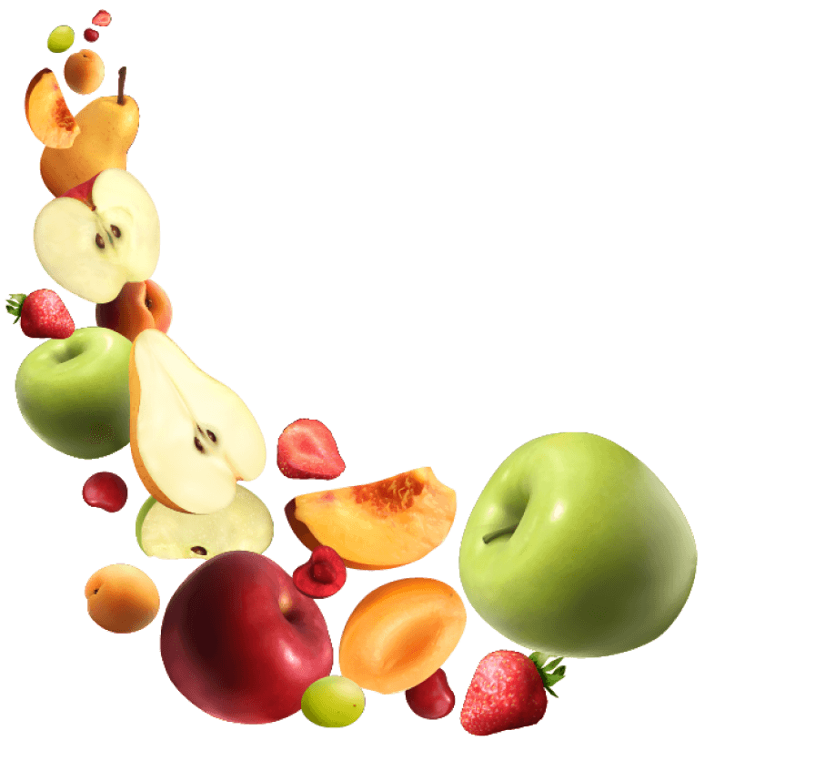
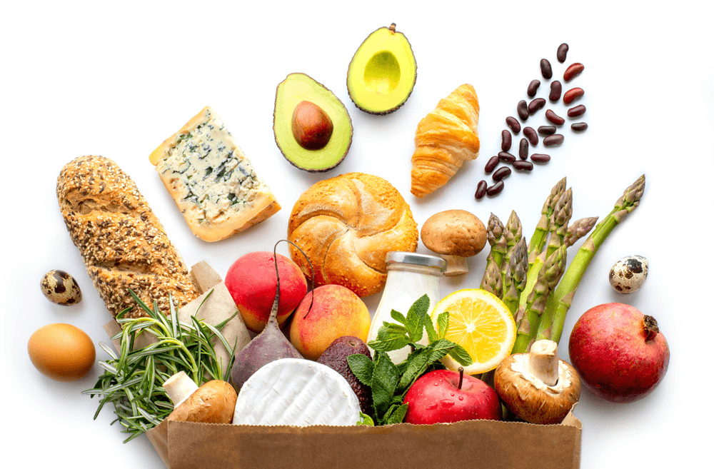
Список продуктов для покупок
-
Айсберг (салат кочанный) 20 г
Баклажан 23 г
Брокколи 34 г
Имбирь, корень сырой 2 г
Кабачок 18 г
Капуста, белокочанная 154 г
Капуста, белокочанная квашеная 11 г
Капуста, краснокочанная 50 г
Картофель, сырой 1.26 кг
Кресс-салат 10 г
Лук зеленый (перо) 5 г
Лук порей 45 г
Лук, репчатый 141 г
Морковь 242 г
Огурец. грунтовый 380 г
Огурцы, маринованные с укропом 58 г
Перец сладкий, желтый 30 г
Перец сладкий, красный 106 г
Петрушка (корень) 8 г
Петрушка, свежая 12 г
Помидор (томат) 572 г
Помидор (томат), грунтовый 74 г
Руккола 98 г
Свекла 146 г
Укроп, свежий 2 г
Цветная капуста, вареная с солью 34 г
Чеснок, сырой 28 г
Шампиньоны, сырые 79 г
Шпинат, сырой 19 г
Помидор (томат), черри 2 шт.
Лук красный 12 г
-
Абрикос 100 г
Авокадо 12 г
Ананас, консервированный в легком сахарном сиропе 14 г
Апельсин 182 г
Банан 827 г
Виноград 211 г
Вишня 142 г
Груша 198 г
Киви, свежее 63 г
Клубника 189 г
Лимон 8 г
Малина 297 г
Манго 97 г
Оливки (чёрные), консервированные 18 г
Оливки (зеленые), консервированные 7 г
Слива 58 г
Яблоко 381 г
-
Булгур, сухой 112 г
Горох, лущеный крупа 25 г
Горошек, зеленый консервированный 8 г
Гречиха, зерно 143 г
Киноа, приготовленная 7 г
Кукурузная крупа 69 г
Кускус (кус-кус), сухой 57 г
Нут (турецкий горох), вареный без соли 33 г
Овсяная крупа (овес) 7 г
Овсяная мука (овес) 12 г
Овсяная крупа (овес), "Геркулес" хлопья 55 г
Рис белый, длиннозерный приготовленный без соли 150 г
Рис белый, длиннозерный сухой 208 г
Рис белый, короткозерный сухой 25 г
Фасоль, стручковая зеленая 69 г
Фасоль, стручковая зеленая вареная с солью 34 г
Чечевица 28 г
Рис, бурый короткозерный сухой 73 г
-
Макароны, сухие 125 г
Пшеничная мука, белая высшего сорта 151 г
Пшеничная мука цельнозерновая 26 г
Фунчоза (лапша из крахмала бобов мунг), сухая 62 г
Макароны цельнозерновые (варенные) 65 г
-
Батон нарезной (хлеб) 12 г
Варенье из малины 20 г
Крекеры с отрубями 80 г
Хлеб овсяный, низкокалорийный 40 г
Хлеб овсяный с отрубями 40 г
Панировочные сухари 11 г
Хлеб пшеничный 28 г
Хлеб ржаной 120 г
Хлеб из цельного зерна 4 шт.
Хлеб ржано-пшеничный бородинский 60 г
Шоколад, горький 30 г
Пастила Белевская 250 г
Батончик зерновой с цукатами (ВкусВилл) 100 г
-
Йогурт, 1,5% жирности натуральный 16 мл
Йогурт, 3,2% жирности натуральный 19 мл
Йогурт, 3,2% жирности сладкий 245 мл
Йогурт греческий 2% жирности, натуральный 120 мл
Масло сливочное 62 мл
Масло сливочное 72,5% жирности, крестьянское 34 мл
Масло сливочное 82,5% жирности, традиционное (в т.ч. Вологодское) 33 мл
Масло сливочное, топленое 99% жирности 13 мл
Сливки, 35% жирности пастеризованные 4 мл
Сметана, 10% жирности 40 мл
Сметана, 15% жирности 53 мл
Сметана, 20% жирности 22 мл
Сыр гауда, м.д.ж. 47% в сух. в-ве 20 мл
Сыр моцарелла, м.д.ж. 34% в сух. в-ве 9 мл
Сыр пармезан, м.д.ж. 36% в сух. в-ве 15 мл
Сыр фета, м.д.ж. 48% в сух. в-ве 35 мл
Сыр чеддар, с низким содержанием жира 20 мл
Творог, 5% жирности 162 мл
Яичный желток, куриный 3 г
Яйцо, куриное 184 г
Яйцо, куриное вареное вкрутую 130 г
Сыр м.д.ж. 30% в сухом в-ве 39 мл
-
Баранина, 1 кат. 84 г
Говядина, отборная вырезка сырая 53 г
Говядина, 1 кат. 184 г
Индейка 174 г
Индейка, белое мясо 84 г
Куриная грудка (филе, курица) 141 г
Свинина, вырезка 48 г
Телятина, 1 кат. 246 г
Фарш из индейки 77 г
-
Креветка, приготовленная на пару 30 г
Креветка, сырая 76 г
Лосось, атлантический (семга) 276 г
Морская капуста (ламинария) 13 г
Семга, соленая 30 г
Треска 65 г
Тунец натуральный. Консервы 28 г
-
Арахис, жареный 30 г
Грецкий орех 87 г
Изюм, без косточек 50 г
Кешью, сухая обжарка без соли 20 г
Курага (абрикосы сушеные) 62 г
Манго сушеное подслащенное 50 г
Мускатный орех, молотый 1 г
Пекан, орех 10 г
Финики 50 г
Чернослив (слива сушеная) 100 г
-
Ветчина куриная 97 г
-
Ананасовый сок 600 мл
Апельсиновый сок 300 мл
Виноградный сок 300 мл
Вода 3.02 л
Грейпфрутовый сок 300 мл
Кефир 3,2% жирности 600 мл
Кокосовое молоко, сырое 48 мл
Компот из вишни 300 мл
Компот из груши 300 мл
Компот из абрикосов 300 мл
Коровье молоко, 1,5% жирности пастеризованное 268 мл
Коровье молоко, 2,5% жирности пастеризованное 582 мл
Коровье молоко, 3,2% жирности пастеризованное 463 мл
Ряженка, 2,5% жирности 900 мл
Сок из лимона 16 мл
Чай с сахаром 1.1 л
Кофе, капучино 800 мл
Компот из смеси сухофруктов 600 мл
-
Базилик, сушеный 0 г
Бульон, говяжий 449 г
Бульон, куриный 386 г
Ванилин 0 г
Горчица, столовая 13 г
Дрожжи, прессованные 1 г
Желатин (порошок) 10 г
Желатиновое желе низкокалорийное, на воде 150 г
Картофельный крахмал 75 г
Кетчуп 7 г
Клюква 66 г
Корица, молотая 11 г
Кукурузное масло 5 г
Кунжут 7 г
Кунжутное масло 5 г
Льняное масло 6 г
Масло из виноградных косточек 5 г
Мед, пчелиный 27 г
Оливковое масло 37 г
Орегано, сушеный 1 г
Паприка, перец сладкий молотый 0 г
Перец душистый, молотый 2 г
Перец красный, молотый острый 0 г
Перец черный, молотый или горошек 3 г
Подсолнечник, семечки, поджареные без соли 8 г
Подсолнечное масло 30 г
Подсолнечное масло, высокоолеиновое (>70%) 73 г
Разрыхлитель пищевой 1 г
Сахар, песок 237 г
Сахар, коричневый 14 г
Семена чиа, сушеные 3 г
Сода, пищевая 0 г
Соевый соус 28 г
Соль поваренная пищевая 1 г
Соль, столовая йодированная 45 г
Паста, томатная 16 г
Уксус, бальзамический 3 г
Уксус, винный 3% 1 г
Уксус, столовый 9% 9 г
Уксус, яблочный 12 г
Подсластитель эритрит, FitParad 6 г
Мюсли 200 г
Масло гхи 3 г
"Спонсер Карбо Лоудер" ("Sponser Carbo Loader") 300 г
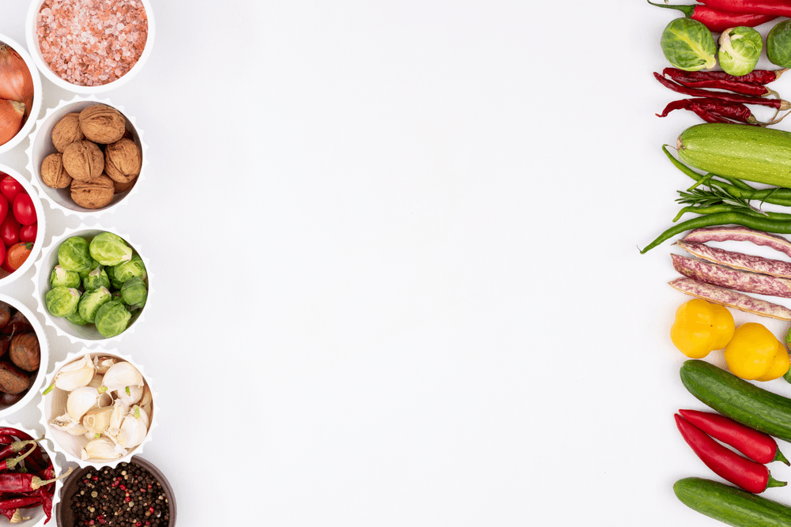
Рецепты
Яичница-болтунья
| Ингредиенты на 50 г готового блюда | Продукт | Кол-во | Вес |
|---|---|---|---|
| Подсолнечное масло, высокоолеиновое (>70%) | 1.5 г | 1.3 мл | |
| Яйцо, куриное | 1 шт. | 41.5 г | |
| Сливки, 35% жирности пастеризованные | 3.5 г | 3.7 г | |
| Коровье молоко, 2,5% жирности пастеризованное | 0.5 г | 0.3 мл | |
| Соль, столовая йодированная | 0.5 г | 0.3 г | |
| Перец черный, молотый или горошек | 2.5 шт. | 0.3 г | |
| Лук порей | 26.6 г | 26.6 г |
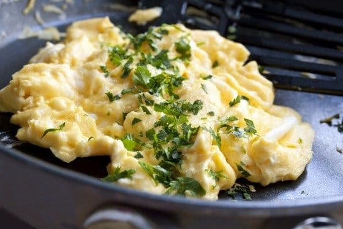
- 1. В плошке слегка взбить венчиком яйца, молоко и сливки, посолить.
- 2. Поставить большую сковороду на медленный огонь. Дождаться, чтобы она нагрелась. Добавить масло и дождаться, пока оно начнет пениться, затем вылить яйца и медленно двигать их по дну и краям сковороды. Продолжать их двигать в течение 2–3 минут, пока яйца не станут нежными и сливочными.
- 3. Тут же снять сковороду с огня и ложкой переложить яичницу на тарелку. Посыпать нарезанным луком-пореем и черным перцем, подавать сразу.
Овсяная каша на молоке
| Ингредиенты на 350 г готового блюда | Продукт | Кол-во | Вес |
|---|---|---|---|
| Овсяная крупа (овес), "Геркулес" хлопья | 4 столовые ложки | 45.4 г | |
| Коровье молоко, 2,5% жирности пастеризованное | 4.5 столовые ложки | 81 мл | |
| Вода | 4.5 столовые ложки | 81 мл |
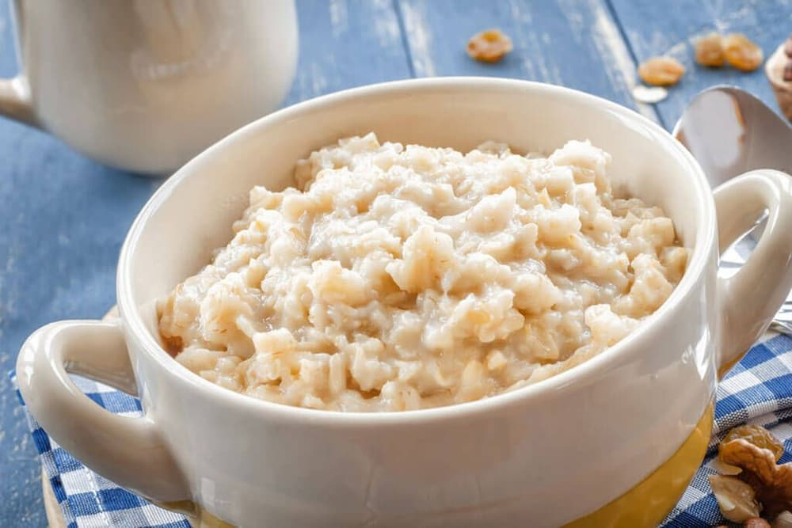
- Молоко в кастрюле довести почти до кипения, добавить геркулес и варить овсяную кашу 15-20 минут, постоянно помешивая.
Блины тонкие обыкновенные
| Ингредиенты на 150 г готового блюда | Продукт | Кол-во | Вес |
|---|---|---|---|
| Соль, столовая йодированная | 0.5 г | 0.7 г | |
| Подсолнечное масло, высокоолеиновое (>70%) | 14.5 г | 14.6 мл | |
| Яйцо, куриное | 0.5 шт. | 30.3 г | |
| Пшеничная мука, белая высшего сорта | 23.5 г | 23.3 г | |
| Коровье молоко, 2,5% жирности пастеризованное | 5 столовых ложек | 91 мл | |
| Сахар, песок | 3.5 г | 3.6 г |
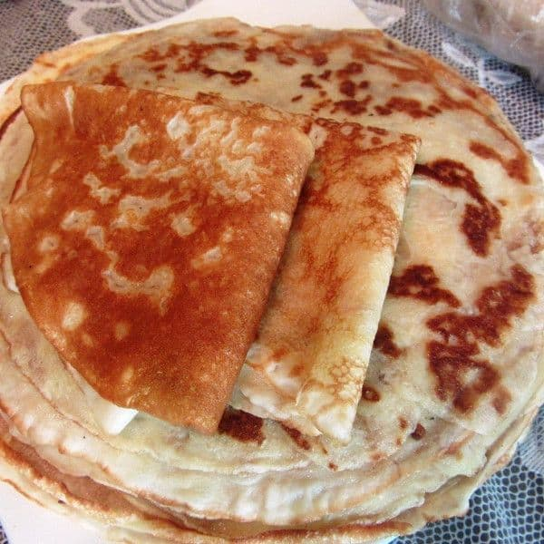
- 1. Разбиваем яйца и хорошенько перемешиваем.
- 2. Добавляем муку и тщательно перемешиваем. Получается очень густая консистенция, и, что самое главное, без комочков.
- 3. По чуть-чуть вливаем молоко и перемешиваем, чем жиже тесто -—тем больше за раз можно добавлять молока. Такой способ поэтапного смешивания ингредиентов позволяет не переживать о возможных комочках, что в случае, когда нет под рукой миксера, становится очень актуально.
- 4. Теперь добавляем соль, сахар.
- 5. Когда сковородка достаточно нагреется (ни в коем случае она не должна быть слишком горячей, в моем случае это температура средняя между максимально возможной и средней для плиты) добавляем в тесто масло, перемешиваем и начинаем жарить блинчики.
- 6. С одной стороны сковородки выливаем немного теста и быстрыми наклонными движениями равномерно распределяем тесто по поверхности, таким образом получается круглый и тонкий блинчик. Примерно секунд 15–20 ждем, пока схватится нижняя сторона, а края подрумянятся, и переворачиваем блинчик, другая сторона готовится еще быстрее.
Картофель отварной
| Ингредиенты на 200 г готового блюда | Продукт | Кол-во | Вес |
|---|---|---|---|
| Картофель, сырой | 3.5 шт. | 347.4 г | |
| Масло сливочное 82,5% жирности, традиционное (в т.ч. Вологодское) | 17.5 г | 17.5 г |
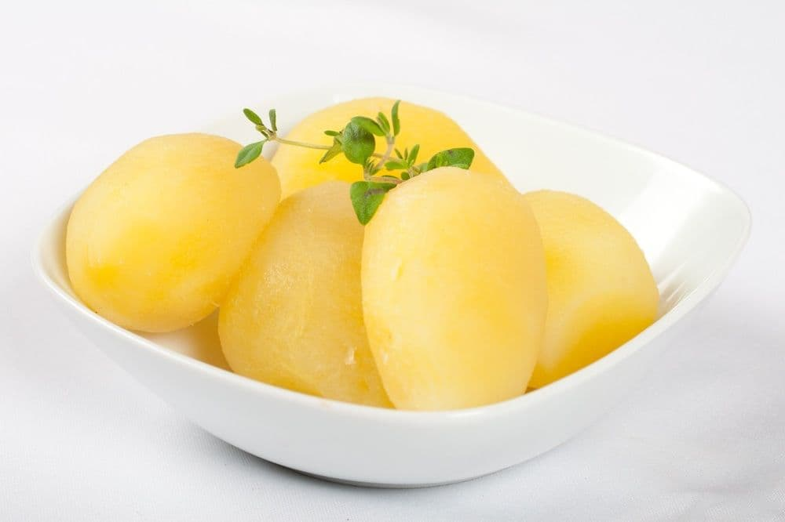
- Картофель предварительно промыть, тщательно перебрать и очистить. Очищенный, промытый картофель залить горячей кипяченой водой (уровень воды должен быть на 1-1.5см выше уровня картофеля), добавить соль(при назначении врача) и варить при небольшом кипении 15-20 минут, закрыв посуду крышкой. Затем отвар слить, а посуду с готовым картофелем поставить на небольшой огонь на 1-2 минуты и, встряхивая, обсушить картофель.
Говядина с овощами
| Ингредиенты на 100 г готового блюда | Продукт | Кол-во | Вес |
|---|---|---|---|
| Говядина, отборная вырезка сырая | 52.7 г | 52.7 г | |
| Помидор (томат) | 0.5 шт. | 60.1 г | |
| Морковь | 16 г | 15.8 г | |
| Лук, репчатый | 23.5 г | 23.7 г | |
| Перец сладкий, желтый | 10.5 г | 10.6 г | |
| Соевый соус | 1 чайная ложка | 4.8 г | |
| Сметана, 15% жирности | 3 г | 2.9 г | |
| Подсолнечное масло, высокоолеиновое (>70%) | 2 г | 1.8 мл |
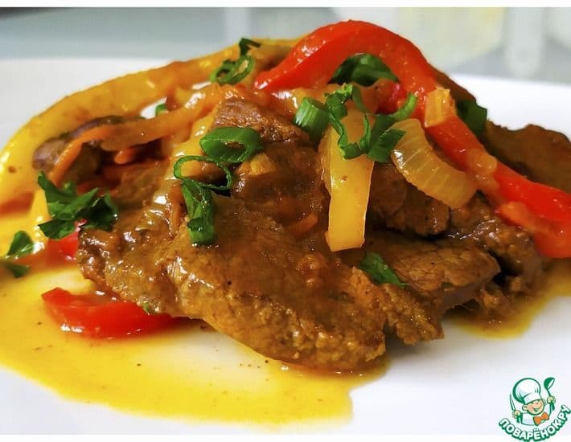
- 1. Нарезать средними кусочками мясо, отправить на раскаленную сковороду, жарить около 20 мин, постоянно помешивая.
- 2. К мясу добавить лук и морковь.
- 3. Спустя мин 15 добавить болгарский перец и соевый соус.
- 4. Затем помидоры, солим, перчим, тушим около 10 мин.
- 5. В конце добавляем сметану, тушим еще 10 мин, добавляем воду в процессе, количество на ваше усмотрение.
Овощи тушеные
| Ингредиенты на 100 г готового блюда | Продукт | Кол-во | Вес |
|---|---|---|---|
| Брокколи | 34.3 г | 34.3 г | |
| Цветная капуста, вареная с солью | 34.3 г | 34.3 г | |
| Фасоль, стручковая зеленая вареная с солью | 34.3 г | 34.3 г |
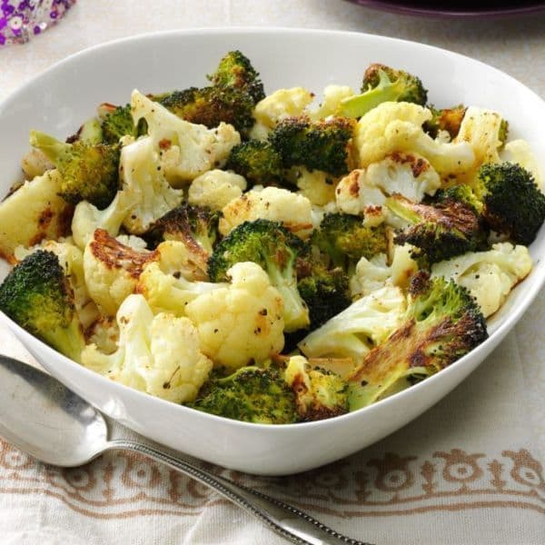
- Овощи посолить,тушить 5-10 минут до готовности
Холодец из филе индейки
| Ингредиенты на 100 г готового блюда | Продукт | Кол-во | Вес |
|---|---|---|---|
| Индейка | 116.3 г | 116.3 г | |
| Чеснок, сырой | 9.5 г | 9.3 г | |
| Горчица, столовая | 8.5 г | 8.5 г | |
| Желатин (порошок) | 5.5 г | 5.4 г |
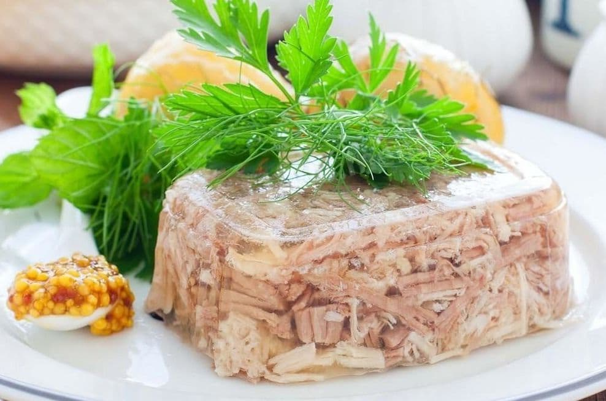
- Мясо индейки без жира отварить в 2 л. воды, переодически снимая пену (можно взять мясо на кости)
- Добавить лавровый лист, перей черный горошком (5-6шт) и соль по-вкусу. Варить 2 ч. на медленном огне
- Желатин залить стаканом воды и оставить набухать 40 минут, а потом растопить импульсами в микроволновке, периодически помешивая. Если желатин быстрорастворимый, то развести его горячим бульоном по инструкции.
- Мясо нарезать, добавить натертый чеснок (1 зубчик)
- В бульон добавить растворенный желатин, размешать и залить мясо бульоном, охладить и поставить в холодильник
- Подавать с горчицей, огурцами и зеленью
Вишневый кисель с корицей
| Ингредиенты на 300 г готового блюда | Продукт | Кол-во | Вес |
|---|---|---|---|
| Вишня | 10 шт. | 71.1 г | |
| Сахар, песок | 19.5 г | 19.4 г | |
| Вода | 1 стакан 250 мл. | 232.6 мл | |
| Картофельный крахмал | 13 г | 13 г | |
| Корица, молотая | 2.5 г | 2.3 г |
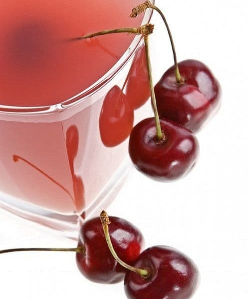
- 1. Подготовленную вишню без косточек залить кипящей водой, добавить специи — кожуру лимона или корицу, довести до кипения, варить на малом огне 10–15 минут.
- 2. Протереть ягоды сквозь сито или дуршлаг. В полученный отвар с мякотью вишни добавить сахар, довести до кипения и влить крахмал, разведенный в небольшом количестве холодной кипяченой воды, размешать, снова довести до кипения и тут же снять с огня. Кисель можно подать горячим или холодным.
Суп харчо с мясом
| Ингредиенты на 250 г готового блюда | Продукт | Кол-во | Вес |
|---|---|---|---|
| Баранина, 1 кат. | 42 г | 42 г | |
| Масло сливочное 72,5% жирности, крестьянское | 2 г | 2.1 г | |
| Паста, томатная | 4 г | 4.2 г | |
| Вода | 1 стакан 200 мл. | 210.1 мл | |
| Петрушка (корень) | 2 г | 2.1 г | |
| Рис белый, короткозерный сухой | 12.5 г | 12.6 г | |
| Лук, репчатый | 6.5 г | 6.3 г |
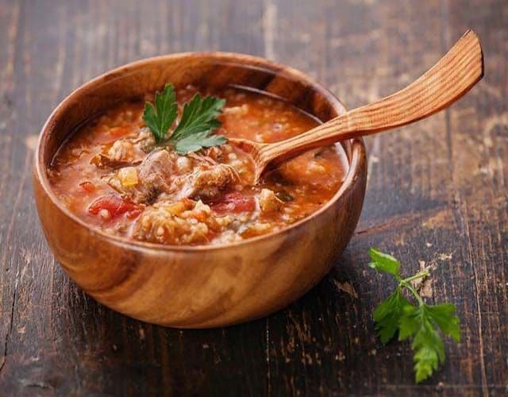
- Баранину нарезают на кусочки массой 25-30 г и варят. Лук репчатый мелко рубят и пассеруют с добавлением томатного пюре.
- В кипящий бульон кладут предварительно замоченную крупу рисовую, пассерованный лук и томатное пюре и варят до готовности. За 5 мин до окончания варки суп заправляют специями.
- #с7лет
Малиновое желе с клубникой
| Ингредиенты на 200 г готового блюда | Продукт | Кол-во | Вес |
|---|---|---|---|
| Клубника | 5.5 шт. | 96.6 г | |
| Малина | 14 шт. | 96.6 г | |
| Желатин (порошок) | 1 г | 1 г | |
| Вода | 12 г | 12.1 мл | |
| Сахар, песок | 3 чайные ложки | 24.2 г |
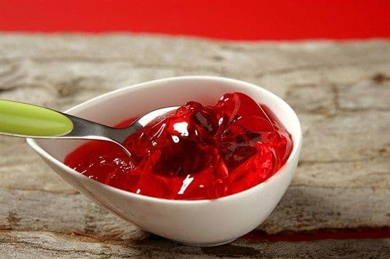
- 1. Малину измельчить в блендере, затем протереть через сито.
- 2. Желатин залить водой, довести до кипения, но не кипятить. Добавить в малиновое пюре желатин и сахар, перемешать.
- 3. Клубнику вымыть, обсушить и разложить по бокалам. Влить желе, поставить в холодильник до полного застывания.
Каша гречневая рассыпчатая (ФИЦ Питания)
| Ингредиенты на 200 г готового блюда | Продукт | Кол-во | Вес |
|---|---|---|---|
| Гречиха, зерно | 2 столовые ложки | 49.1 г | |
| Масло сливочное 72,5% жирности, крестьянское | 7 г | 6.9 г | |
| Соль поваренная пищевая | 0.5 г | 0.4 г | |
| Вода | 4 столовые ложки | 74.1 мл |
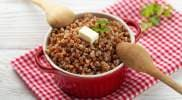
- Гречневую крупу перебрать, тщательно промыть. Подготовленную для варки крупу всыпать в подсоленную кипящую воду, всплывшие пустотелые зерна удалить. Кашу варить до загустения, периодически помешивая. В конце варки добавить масло, плотно закрыть посуду крышкой и оставить на плите с умеренным нагревом для упревания.
Котлеты из индейки, запеченые
| Ингредиенты на 100 г готового блюда | Продукт | Кол-во | Вес |
|---|---|---|---|
| Фарш из индейки | 77.3 г | 77.3 г | |
| Хлеб пшеничный | 15.5 г | 15.5 г | |
| Вода | 20.5 г | 20.6 мл | |
| Соль, столовая йодированная | 0.5 г | 0.5 г |
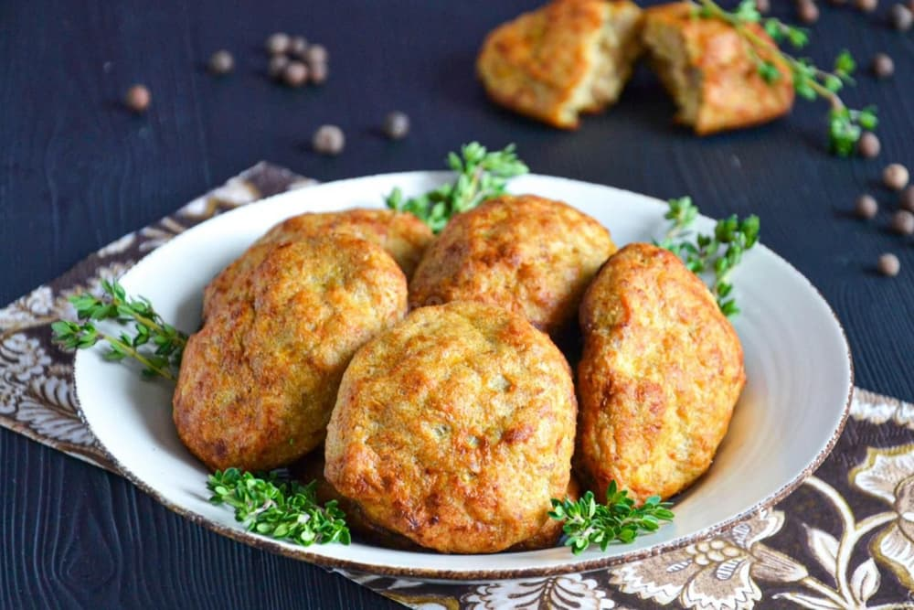
- В фарш из мяса индейки добавляют замоченный в воде хлеб, пропускают через мясорубку, (соль по желанию), хорошо вымешивают. Формуют котлеты и выпекают в духовом шкафу при 180-200 град. до готовности.
- #с4лет
Салат винегрет
| Ингредиенты на 100 г готового блюда | Продукт | Кол-во | Вес |
|---|---|---|---|
| Свекла | 16 г | 16.1 г | |
| Морковь | 0.5 шт. | 26.8 г | |
| Картофель, сырой | 0.5 шт. | 44.6 г | |
| Лук, репчатый | 6.5 г | 6.7 г | |
| Огурцы, маринованные с укропом | 18 г | 17.9 г | |
| Капуста, белокочанная квашеная | 11 г | 11.2 г | |
| Горошек, зеленый консервированный | 8 г | 8 г | |
| Подсолнечное масло | 1.5 чайные ложки | 7.6 мл | |
| Соль, столовая йодированная | 1 г | 0.9 г |
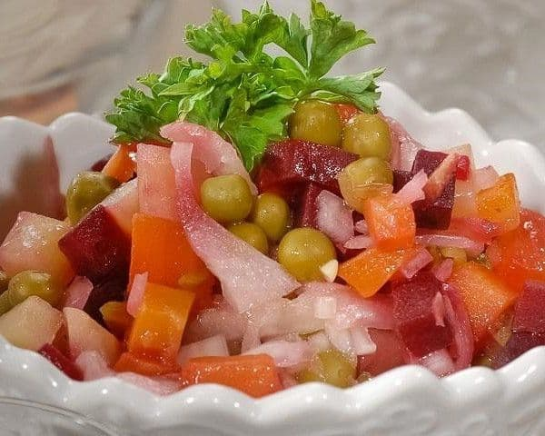
- 1. Свеклу, морковь и картофель отварить.
- 2. Очистить их и нарезать одинаковыми кубиками.
- 3. Лук очистить и вместе с огурцами мелко нарезать, квашеную капусту нашинковать. Смешать в миске картофель, морковь, огурцы, лук, капусту, свеклу и зеленый горошек.
- 4. Посолить по вкусу и заправить растительным маслом.
Высокоуглеводный перекус - гель/саше/батончик ( из разрешенного списка/формуляра НЦСМ ФМБА на текущую дату)
| Ингредиенты на 50 г готового блюда | Продукт | Кол-во | Вес |
|---|---|---|---|
| "Спонсер Карбо Лоудер" ("Sponser Carbo Loader") | 50 г | 50 г |
- Углеводный перекус промышленного производства
Чечевичный суп-пюре
| Ингредиенты на 250 г готового блюда | Продукт | Кол-во | Вес |
|---|---|---|---|
| Вода | 0.5 стакана 250 мл. | 140.5 мл | |
| Чечевица | 2.5 столовые ложки | 28.1 г | |
| Помидор (томат) | 1 шт. | 112.4 г | |
| Чеснок, сырой | 6.5 г | 6.7 г |
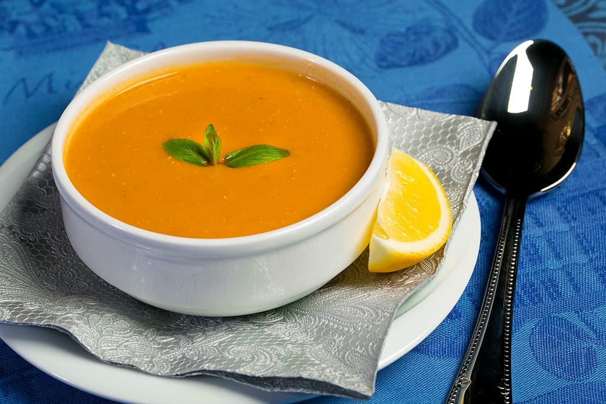
- Промыть чечевицу и добавить ее в подсоленную кипящую воду, варить 25 мин.
- Нарезать томаты, почистить и выдавить чеснок.
- Через 25 мин добавить томаты с чесноком и специями к чечевице. Варить еще 10 мин. Готовый суп пюрировать блендером.
Телятина тушеная
| Ингредиенты на 70 г готового блюда | Продукт | Кол-во | Вес |
|---|---|---|---|
| Телятина, 1 кат. | 114.8 г | 114.8 г |
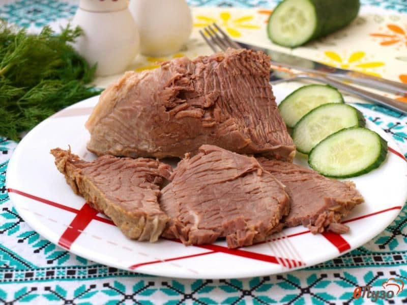
- Телятину разделать на кусочки, тушить.
Булгур с овощами
| Ингредиенты на 300 г готового блюда | Продукт | Кол-во | Вес |
|---|---|---|---|
| Булгур, сухой | 6 столовых ложек | 112.4 г | |
| Перец сладкий, красный | 17 г | 16.9 г | |
| Морковь | 11 г | 11.2 г | |
| Подсолнечное масло, высокоолеиновое (>70%) | 11 г | 11.2 мл | |
| Соль, столовая йодированная | 1 г | 1.1 г |
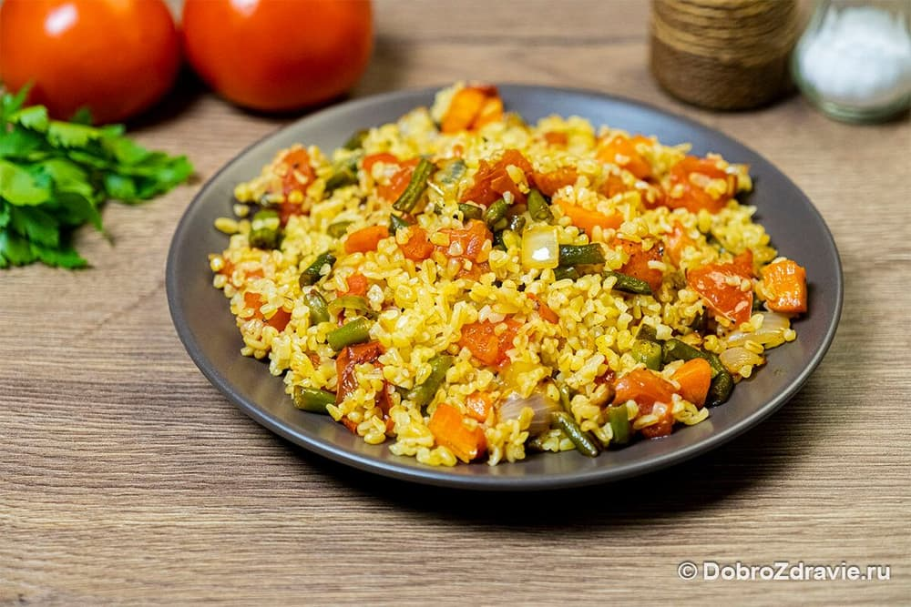
- Овощи режим кубиком 1/1 см, обжариваем в сковороде на масле до полуготовности . Булгур заливаем водой доводим кипения варим на среднем огне 10 мин, и оставляем на медленном еще 5 . Выключаем и оставляем минут на 5 под крышкой.
Пюре из свеклы и яблок (ФИЦ Питания)
| Ингредиенты на 70 г готового блюда | Продукт | Кол-во | Вес |
|---|---|---|---|
| Свекла | 1 шт. | 70 г | |
| Яблоко | 28 г | 28 г | |
| Сахар, песок | 1.5 г | 1.7 г | |
| Масло сливочное 72,5% жирности, крестьянское | 3 г | 2.8 г | |
| Сметана, 20% жирности | 5.5 г | 5.6 г |
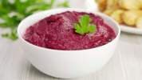
- Свеклу сварить, очистить от кожицы и протереть. Яблоки очистить от кожицы, разрезать на 4-6 частей, удалить семенные гнезда, запечь и протереть. В протертую свеклу и яблоки добавить сахар, сметану, сливочное масло, перемешать, прогреть при температуре 80ºС при непрерывном помешивании до готовности.
Кисель из клюквы
| Ингредиенты на 300 г готового блюда | Продукт | Кол-во | Вес |
|---|---|---|---|
| Вода | 1 стакан 250 мл. | 252.1 мл | |
| Картофельный крахмал | 2 чайные ложки | 20.2 г | |
| Сахар, песок | 1 столовая ложка | 25.2 г | |
| Клюква | 0.5 стакана 200 мл. | 32.8 г |
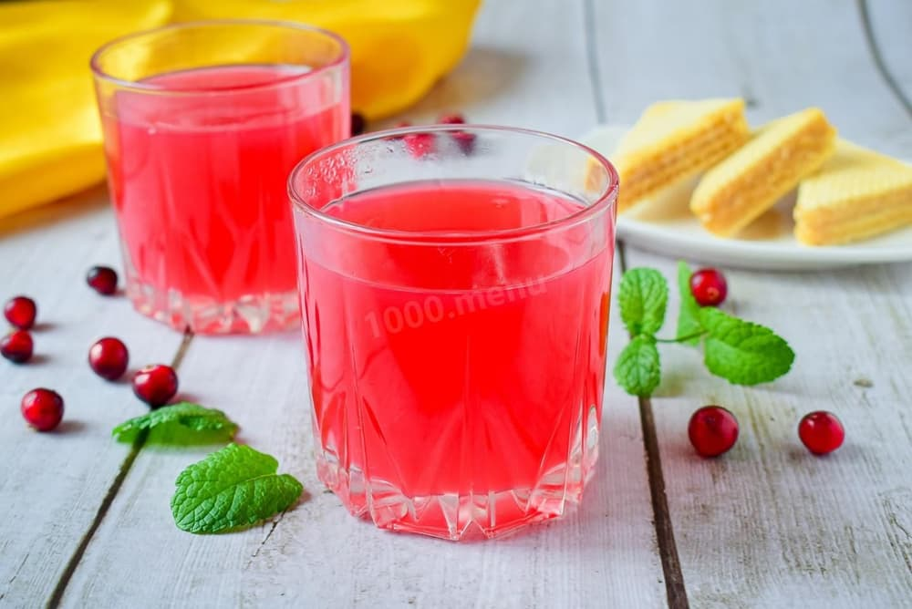
- Ягоды варят 20-30 мин при слабом кипении, протирают и соединяют с отваром, в котором они варились, добавляют сахар, доводят до кипения, вводят подготовленный крахмал и вновь доводят до кипения.
Булочки с корицей на дрожжах
| Ингредиенты на 50 г готового блюда | Продукт | Кол-во | Вес |
|---|---|---|---|
| Масло сливочное | 0.5 чайные ложки | 4.9 г | |
| Яйцо, куриное | 2.5 г | 2.6 г | |
| Сахар, песок | 3.5 г | 3.4 г | |
| Дрожжи, прессованные | 0.5 г | 0.3 г | |
| Коровье молоко, 2,5% жирности пастеризованное | 2.5 чайные ложки | 12.3 мл | |
| Пшеничная мука, белая высшего сорта | 22 г | 22.1 г | |
| Соль, столовая йодированная | 0.5 г | 0.5 г | |
| Сахар, коричневый | 3.5 г | 3.7 г | |
| Корица, молотая | 2 г | 2 г |
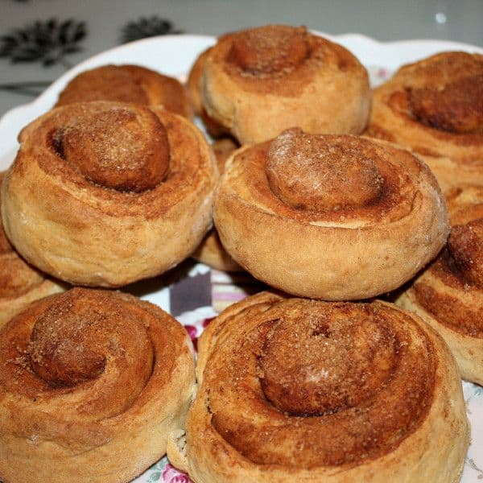
- 1. Дрожжи смешать с 2–3 столовыми ложками теплого молока, 1 чайной ложкой сахара и 1 столовой ложкой муки и оставить на 10 минут.
- 2. Масло растереть с сахаром, добавить яйцо, взбить хорошо до однородной массы венчиком.
- 3. Добавить муку по частям, молоко, получившуюся молочно-дрожжевую смесь и все перемешать.
- 4. Стол посыпать рукой и тщательно вымесить тесто.
- 5. Оставить тесто на час-два, пока оно не увеличится в два раза.
- 6. Когда тесто готово, посыпаем стол мукой и раскатываем его в прямоугольник.
- 7. Посыпаем тесто сахарно-коричной смесью.
- 8. Тесто заворачиваем в рулетик и разрезаем на булочки.
- 9. Противень выстелить пекарской бумагой, смазать сливочным малом.
- 10. Выложить булочки. Смазать их взбитым яйцом и выпекать около 30–40 минут при 180 градусах.
Картофельное пюре (ФИЦ Питания)
| Ингредиенты на 250 г готового блюда | Продукт | Кол-во | Вес |
|---|---|---|---|
| Картофель, сырой | 3.5 шт. | 356.5 г | |
| Коровье молоко, 3,2% жирности пастеризованное | 3 столовые ложки | 56.5 мл | |
| Соль, столовая йодированная | 11 г | 10.9 г | |
| Подсолнечное масло, высокоолеиновое (>70%) | 0.5 г | 0.7 мл |
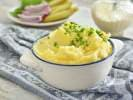
- Очищенный картофель промыть, сварить в подсоленной воде, отвар слить. Горячий картофель пропустить через протирочную машину (или блендер), соединить с горячим кипяченым молоком, маслом, хорошо перемешать, прогреть. Блюдо подавать горячим.
Лосось атлантический запеченный
| Ингредиенты на 100 г готового блюда | Продукт | Кол-во | Вес |
|---|---|---|---|
| Лосось, атлантический (семга) | 0.5 шт. | 125.7 г | |
| Лимон | 2 г | 2.1 г | |
| Укроп, свежий | 0.5 чайные ложки | 1.1 г |
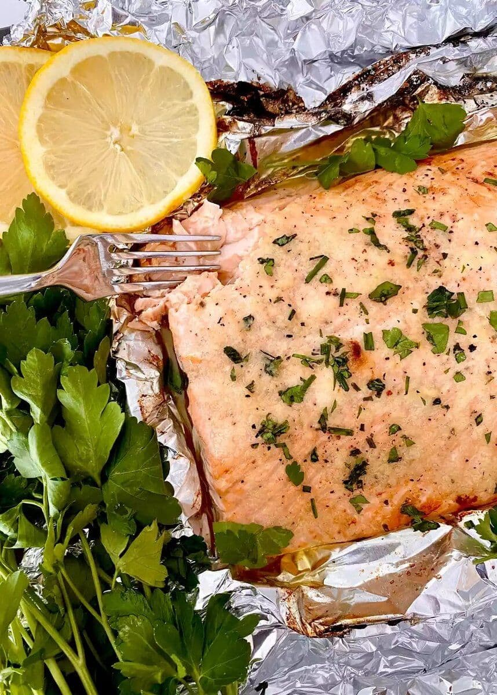
- Филе рыбы нарезают порционными кусками. Выкладывают на противень, сверху кладут ломтик лимона и веточку укропа. Специи по назначению врача.
- #с7лет
Овощи гриль
| Ингредиенты на 70 г готового блюда | Продукт | Кол-во | Вес |
|---|---|---|---|
| Баклажан | 23.5 г | 23.3 г | |
| Помидор (томат) | 0.5 шт. | 31.1 г | |
| Лук, репчатый | 15.5 г | 15.6 г | |
| Шампиньоны, сырые | 15.5 г | 15.6 г | |
| Соль, столовая йодированная | 1 г | 0.8 г | |
| Перец черный, молотый или горошек | 8 шт. | 0.8 г | |
| Уксус, столовый 9% | 8 г | 7.8 г | |
| Чеснок, сырой | 4.5 г | 4.7 г | |
| Йогурт, 1,5% жирности натуральный | 15.5 г | 15.6 г |
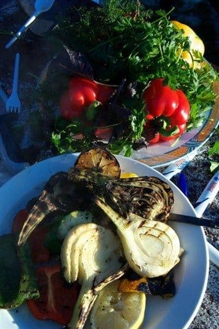
- 1. Баклажаны промыть, нарезать в длину полосками толщиной 1 см. Помидоры промыть и нарезать кружочками толщиной 1 см. Грибы промыть, отделить от ножек, со шляпок снять верхнюю кожицу. Лук очистить, нарезать кольцами толщиной 1 см.
- 2. Все овощи выложить на противень, предварительно застеленный бумагой для запекания и смазанный растительным маслом.
- 3. Баклажаны намазать уксусом. Затем все овощи посолить, поперчить и сбрызнуть сверху растительным маслом.
- 4. Поставить в духовку на 20 минут на гриль, температура 250 градусов.
- 5. Чеснок мелко порубить, смешать с йогуртом.
- 6. После этого вытащить и баклажаны намазать смесью из йогурта и чеснока и поставить в духовку еще на 5 минут.
мюсли батончик
| Ингредиенты на 96 г готового блюда | Продукт | Кол-во | Вес |
|---|---|---|---|
| Мюсли | 50 г | 50 г | |
| Яблоко | 0.5 шт. | 35 г | |
| Арахис, жареный | 15 г | 15 г |
- Мюсли батончик фруктово-орехово-зерновой
Кукурузная каша
| Ингредиенты на 350 г готового блюда | Продукт | Кол-во | Вес |
|---|---|---|---|
| Вода | 0.5 стакана 250 мл. | 157.7 мл | |
| Кукурузная крупа | 4.5 чайные ложки | 28.4 г | |
| Коровье молоко, 2,5% жирности пастеризованное | 5.5 столовые ложки | 98.5 мл | |
| Масло сливочное | 8 г | 7.9 г | |
| Сахар, песок | 0.5 чайные ложки | 3.9 г | |
| Соль, столовая йодированная | 1 г | 0.8 г |
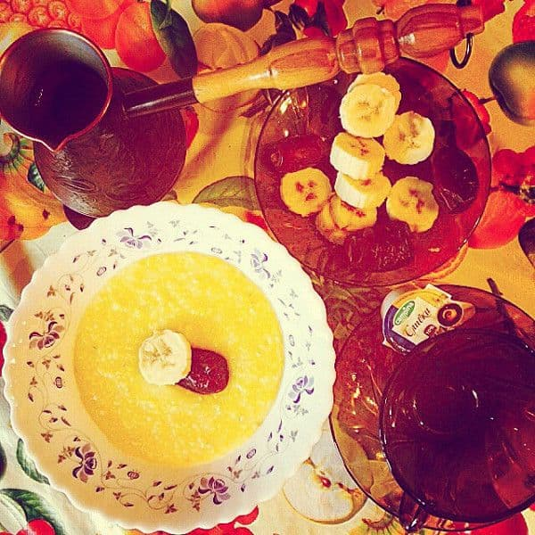
- 1. В кипящую подсоленную воду всыпать помешивая крупу и варить на слабом огне 10–15 минут.
- 2. Влить кипящее молоко, всыпать сахар, положить сливочное масло, размешать и продолжать варить на слабом огне еще 15–20 минут.
Сырники творожные запеченные
| Ингредиенты на 200 г готового блюда | Продукт | Кол-во | Вес |
|---|---|---|---|
| Масло сливочное 72,5% жирности, крестьянское | 2.5 г | 2.6 г | |
| Соль, столовая йодированная | 1 г | 0.9 г | |
| Пшеничная мука цельнозерновая | 1 столовая ложка | 25.5 г | |
| Творог, 5% жирности | 161.7 г | 161.7 г | |
| Сахар, песок | 13.5 г | 13.6 г | |
| Яйцо, куриное | 13.5 г | 13.6 г | |
| Сметана, 20% жирности | 7 г | 6.8 г |
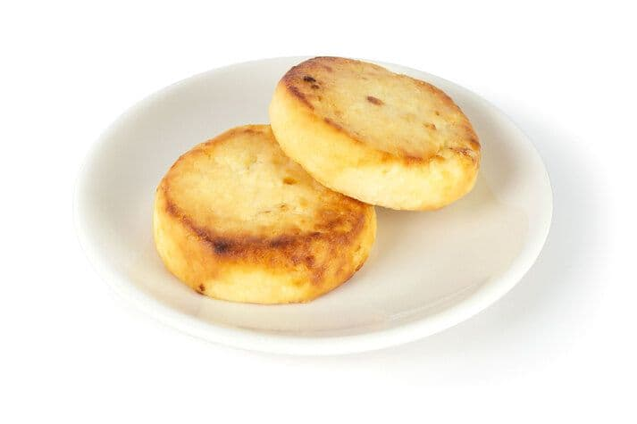
- Творог протереть, добавить яйцо, сахар, муку,соль и тщательно перемешать. Сформовать круглые сырники по 2 штуки на порцию. Запанировать в муке. выложить на противень, смазанный маслом.Сверху сырники смазать сметаной и запекать в духовом шкафу при температуре 200-250 гр.
Суп куриный с лапшой
| Ингредиенты на 250 г готового блюда | Продукт | Кол-во | Вес |
|---|---|---|---|
| Картофель, сырой | 0.5 шт. | 27.2 г | |
| Масло сливочное 72,5% жирности, крестьянское | 2.5 г | 2.7 г | |
| Бульон, куриный | 1 стакан 250 мл. | 190.2 г | |
| Морковь | 11 г | 10.9 г | |
| Макароны, сухие | 21.5 г | 21.7 г | |
| Лук, репчатый | 5.5 г | 5.4 г | |
| Соль, столовая йодированная | 1.5 г | 1.4 г |
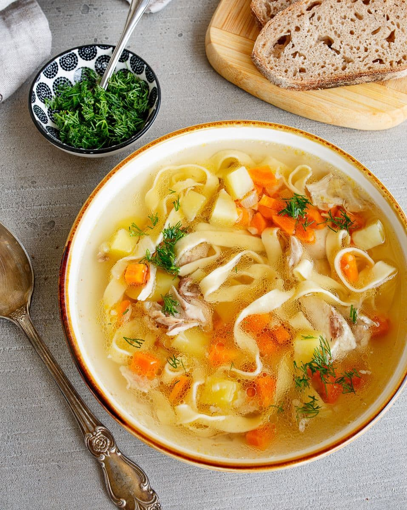
- Овощи предварительно перебрать, очистить, промыть. Подготовленные морковь, репчатый лук мелко нашинковать, припустить в небольшом количестве бульона с добавлением сливочного масла затем добавить бульон мелко шинкованный картофель, соль и варить до готовности. Вермишель отварить в большом количестве воды, откинуть на сито, соединить с куриным бульоном, довести до кипения. Можно посыпать мелко нашинкованной свежей зеленью.
- #с4лет
Салат греческий
| Ингредиенты на 89 г готового блюда | Продукт | Кол-во | Вес |
|---|---|---|---|
| Огурец. грунтовый | 17 г | 17 г | |
| Помидор (томат) | 20 г | 20 г | |
| Лук, репчатый | 5 г | 5 г | |
| Перец сладкий, красный | 25 г | 25 г | |
| Перец душистый, молотый | 1 г | 1 г | |
| Оливки (чёрные), консервированные | 5 г | 5 г | |
| Оливковое масло | 1 чайная ложка | 5 мл | |
| Сок из лимона | 2 г | 2 мл | |
| Сыр фета, м.д.ж. 48% в сух. в-ве | 20 г | 20 г |
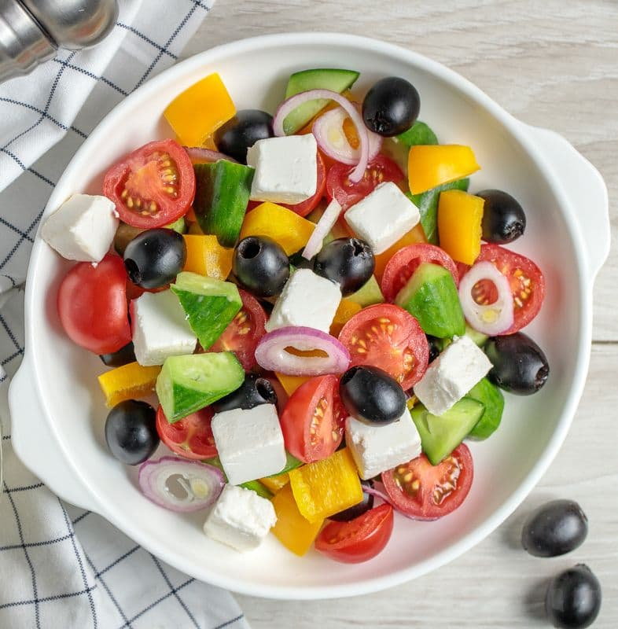
- Овощи моют, обсушивают, нарезают кубиками. Сыр «фета» нарезают кубиком. Лук — кольцами. На тарелку выкладывают лист салата, сверху нарезанные овощи, сыр «фета», кольца лука.
- Салат солят, перчат, поливают оливковым маслом и лимонным соком.
Холодец из филе индейки
| Ингредиенты на 50 г готового блюда | Продукт | Кол-во | Вес |
|---|---|---|---|
| Индейка | 58.1 г | 58.1 г | |
| Чеснок, сырой | 4.5 г | 4.7 г | |
| Горчица, столовая | 4.5 г | 4.3 г | |
| Желатин (порошок) | 0.5 чайные ложки | 2.7 г |
- Мясо индейки без жира отварить в 2 л. воды, переодически снимая пену (можно взять мясо на кости)
- Добавить лавровый лист, перей черный горошком (5-6шт) и соль по-вкусу. Варить 2 ч. на медленном огне
- Желатин залить стаканом воды и оставить набухать 40 минут, а потом растопить импульсами в микроволновке, периодически помешивая. Если желатин быстрорастворимый, то развести его горячим бульоном по инструкции.
- Мясо нарезать, добавить натертый чеснок (1 зубчик)
- В бульон добавить растворенный желатин, размешать и залить мясо бульоном, охладить и поставить в холодильник
- Подавать с горчицей, огурцами и зеленью
Фунчоза с овощами
| Ингредиенты на 250 г готового блюда | Продукт | Кол-во | Вес |
|---|---|---|---|
| Фунчоза (лапша из крахмала бобов мунг), сухая | 61.6 г | 61.6 г | |
| Лук порей | 18.5 г | 18.5 г | |
| Морковь | 18.5 г | 18.5 г | |
| Перец сладкий, красный | 18.5 г | 18.5 г | |
| Масло сливочное, топленое 99% жирности | 9 г | 9.2 г | |
| Кабачок | 18.5 г | 18.5 г | |
| Кунжут | 1 чайная ложка | 3.1 г | |
| Соевый соус | 6 г | 6.2 г |
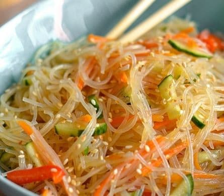
- Отвариваем фунчозу согласно рецепту на упаковке. порядка 5 минут
- Одновременно в сотейнике разогреваем топленое масло
- туда загружаем нарезанные тонкой соломкой овощи: кабачок, морковь, перец
- и кольцами лук порей.
- немного обжариваем до требуемой вам степени готовности
- После обжарки добавляем фунчозу и перемешиваем.
- вместо соли использую немного соевого соуса.
- Очень вкусное и красивое блюдо!
Салат "Летний"
| Ингредиенты на 70 г готового блюда | Продукт | Кол-во | Вес |
|---|---|---|---|
| Помидор (томат) | 0.5 шт. | 32.7 г | |
| Яблоко | 16.5 г | 16.4 г | |
| Перец сладкий, красный | 24.5 г | 24.5 г | |
| Оливковое масло | 1.5 чайные ложки | 7.4 мл | |
| Соль, столовая йодированная | 0.2 г | 0.2 г | |
| Сахар, коричневый | 0.2 г | 0.2 г | |
| Сок из лимона | 1.5 г | 1.6 мл |
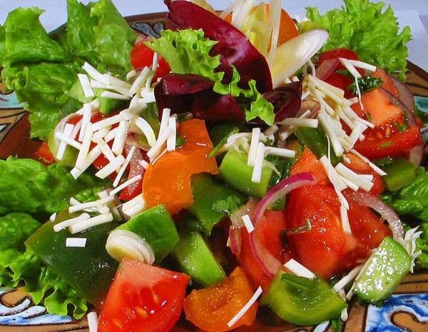
- Помидоры положите в дуршлаг, облейте кипятком, а затем сразу же - холодной водой. Снимите кожицу. Нарежьте очищенные помидоры тонкими ломтиками.
- Очищенное яблоко разрежьте пополам и удалите сердцевину. Яблоко тоже нарежьте дольками. Перец нарежьте мелкой соломкой. Все перемешайте.
- Посолите, всыпьте сахар, добавьте лимонный сок и полейте растительным маслом.
Рис отварной рассыпчатый (ФИЦ Питания)
| Ингредиенты на 180 г готового блюда | Продукт | Кол-во | Вес |
|---|---|---|---|
| Рис белый, длиннозерный сухой | 1.5 столовые ложки | 42.8 г | |
| Вода | 5 столовых ложек | 89.6 мл | |
| Соль, столовая йодированная | 1 г | 0.8 г | |
| Масло сливочное 72,5% жирности, крестьянское | 4 г | 4 г |
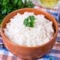
- Рис перебрать, промыть в теплой и горячей воде, засыпать в кипящую, подсоленную воду, удалить всплывшие пустотелые зерна и варить до готовности. Откинуть рис на сито, добавить сливочное масло, тщательно перемешать, прогреть. Подавать в теплом виде на гарнир.
Котлеты классические
| Ингредиенты на 100 г готового блюда | Продукт | Кол-во | Вес |
|---|---|---|---|
| Говядина, 1 кат. | 59.4 г | 59.4 г | |
| Свинина, вырезка | 47.5 г | 47.5 г | |
| Яйцо, куриное | 6 г | 6.2 г | |
| Батон нарезной (хлеб) | 12 г | 11.9 г | |
| Коровье молоко, 1,5% жирности пастеризованное | 6 г | 5.9 мл | |
| Лук, репчатый | 12 г | 11.9 г | |
| Мускатный орех, молотый | 1 г | 1.2 г | |
| Перец душистый, молотый | 1 г | 1.2 г | |
| Соль, столовая йодированная | 1 г | 1.2 г | |
| Масло сливочное, топленое 99% жирности | 3.5 г | 3.6 г |
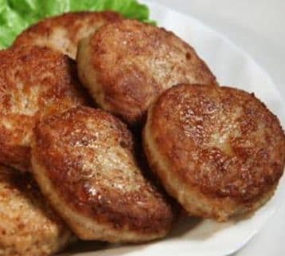
- 1. Замачиваем хлеб в молоке
- 2. Мясо прокручиваем в фарш.
- 3. Прокручиваем в мясо лук и замоченный в молоке хлеб, добавляем яйцо, специи
- 4. Все тщательно перемешиваем и даём фаршу постоять 20-30 мин.
- 5. Большой ложкой берём фарш с горкой и смоченными водой руками формируем шарики. Придаём плоскую форму.
- 6. Растапливаем топленое масло на сковородке и выкладываем котлеты на сковородку
- 7. Жарим на среднем огне по 5 минут с каждой стороны
Каша гречневая молочная без масла
| Ингредиенты на 300 г готового блюда | Продукт | Кол-во | Вес |
|---|---|---|---|
| Вода | 3.5 столовые ложки | 64.1 мл | |
| Гречиха, зерно | 1.5 столовые ложки | 42.7 г | |
| Коровье молоко, 2,5% жирности пастеризованное | 0.5 стакана 250 мл. | 138.8 мл | |
| Сахар, песок | 5.5 г | 5.3 г |
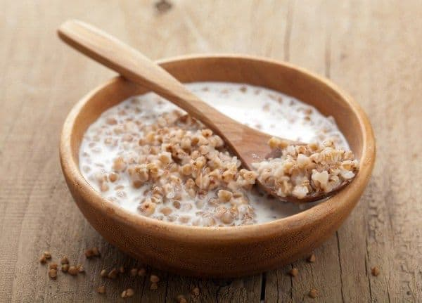
- В кипящую воду всыпают перебранную и промытую крупу, перемешивают и варят до полуготовности. Затем вливают горячее молоко и варят до готовности при слабом кипении под закрытой крышкой.
- #с7лет
Кускус (кус-кус), приготовленный
| Ингредиенты на 250 г готового блюда | Продукт | Кол-во | Вес |
|---|---|---|---|
| Кускус (кус-кус), сухой | 2.5 столовые ложки | 57.2 г | |
| Вода | 6.5 столовые ложки | 114.4 мл | |
| Соль, столовая йодированная | 0.5 г | 0.6 г |
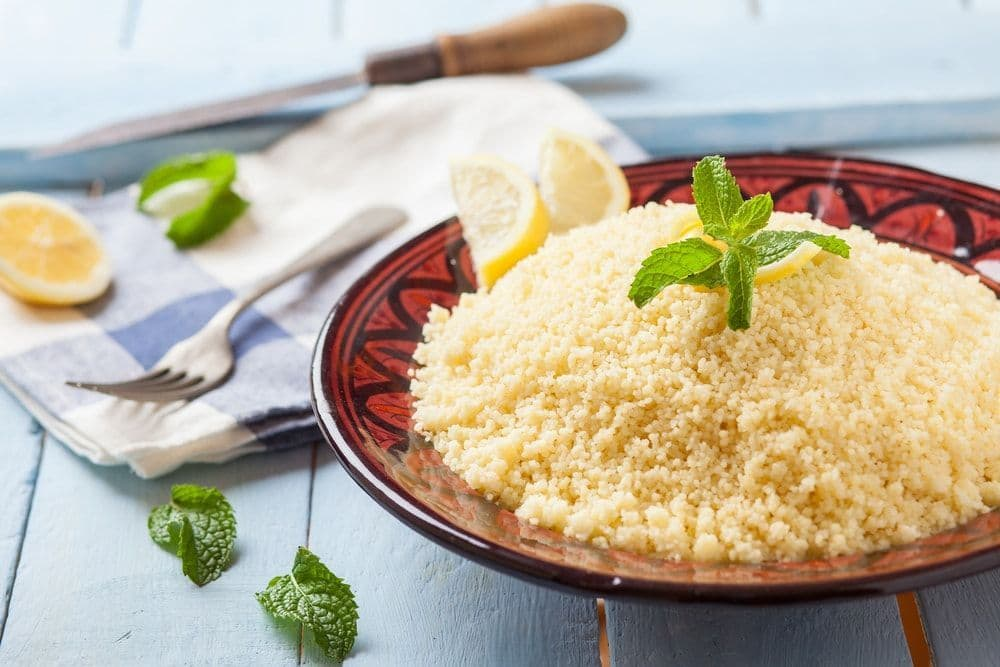
- Варить крупу не обязательно, можно предварительно запарить в кипячёной воде на 15 минут. Кус-кус выходит рассыпчатым, хорошо добавлять в салаты. Для каш его нужно выдержать немного дольше, хватит и 20 минут при соблюдении пропорций.
- Важно правильно взять количество ингредиентов для получения рассыпчатой консистенции. Необходимо подготовить воду и крупу в пропорции 1,5:1. Воду желательно регулировать, чтобы блюдо получилось нужной консистенции. Получить влажный кус-кус можно, если взять воды с крупой в соотношении 2:1. Когда жидкость полностью впитается, её считают готовой к употреблению.
Лосось атлантический запеченный
| Ингредиенты на 120 г готового блюда | Продукт | Кол-во | Вес |
|---|---|---|---|
| Лосось, атлантический (семга) | 0.5 шт. | 150.8 г | |
| Лимон | 2.5 г | 2.5 г | |
| Укроп, свежий | 1.5 г | 1.3 г |
- Филе рыбы нарезают порционными кусками. Выкладывают на противень, сверху кладут ломтик лимона и веточку укропа. Специи по назначению врача.
- #с7лет
Щи из свежей капусты на мясном бульоне со сметаной (ФИЦ Питания)
| Ингредиенты на 300 г готового блюда | Продукт | Кол-во | Вес |
|---|---|---|---|
| Капуста, белокочанная | 74.9 г | 74.9 г | |
| Картофель, сырой | 0.5 шт. | 49.9 г | |
| Морковь | 12.5 г | 12.5 г | |
| Лук, репчатый | 6 г | 6 г | |
| Подсолнечное масло, высокоолеиновое (>70%) | 0.5 чайные ложки | 2.5 мл | |
| Сметана, 20% жирности | 5 г | 5 г | |
| Петрушка, свежая | 3.5 г | 3.5 г | |
| Петрушка (корень) | 3.5 г | 3.5 г | |
| Помидор (томат) | 12 г | 12 г | |
| Бульон, говяжий | 1 стакан 250 мл. | 224.6 г | |
| Соль, столовая йодированная | 0.5 г | 0.3 г |
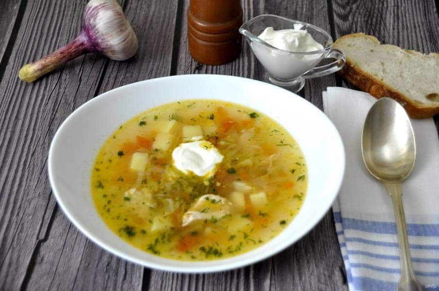
- Подготовленные овощи: морковь, репчатый лук, корень петрушки мелко нарезать, припустить в небольшом количестве воды с добавлением масла, в конце добавить томат или свежие помидоры. Белокочанную капусту зачистить, промыть, нарезать тонкими шашками, залить горячим мясным бульоном, довести до кипения, добавить мелко нарезанный картофель, припущенные коренья, соль и варить до готовности. При подаче суп заправить сметаной и посыпать мелко нарезанной зеленью петрушки.
Салат из свеклы и нута
| Ингредиенты на 70 г готового блюда | Продукт | Кол-во | Вес |
|---|---|---|---|
| Свекла | 21 г | 21.1 г | |
| Оливковое масло | 5.5 г | 5.4 мл | |
| Чеснок, сырой | 0.5 г | 0.5 г | |
| Сок из лимона | 0.5 чайные ложки | 2.4 мл | |
| Нут (турецкий горох), вареный без соли | 32.9 г | 32.9 г | |
| Сыр фета, м.д.ж. 48% в сух. в-ве | 3 г | 3.1 г | |
| Руккола | 8 г | 7.8 г | |
| Шпинат, сырой | 8 г | 7.8 г | |
| Грецкий орех | 5.5 г | 5.5 г |
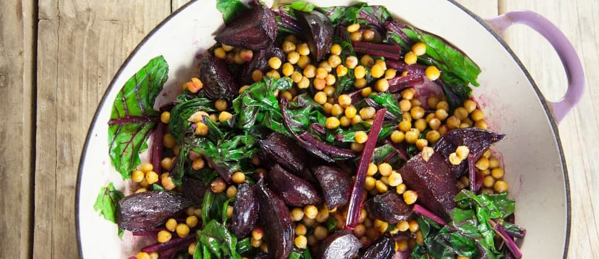
- Доведите кастрюлю с водой до кипения.
- Отрежьте стебли свеклы, оставив около дюйма. Поместите свеклу в кастрюлю с кипящей водой, накройте крышкой и варите около 45 минут или до готовности.
- Пока свекла варится, приготовьте винегрет, смешав в небольшой миске оливковое масло, свежевыжатый лимонный сок, чеснок и сыр фета.
- Используя щипцы, достаньте свеклу из кастрюли и поместите ее в миску с холодной водой. Когда он остынет на ощупь, отрежьте корни и стебли, затем руками снимите кожицу. Нарезаем свеклу некрупными кусочками.
- В большую миску добавьте нарезанную зелень, затем сверху выложите свеклу и нут.
- Добавьте винегрет и слегка перемешайте. Посыпьте салат измельченными грецкими орехами, подавайте и наслаждайтесь!
- #Греция
Булочки бриошь
| Ингредиенты на 70 г готового блюда | Продукт | Кол-во | Вес |
|---|---|---|---|
| Пшеничная мука, белая высшего сорта | 1 столовая ложка | 29.7 г | |
| Сахар, песок | 6 г | 5.9 г | |
| Соль, столовая йодированная | 0.5 г | 0.5 г | |
| Дрожжи, прессованные | 0.1 г | 0.1 г | |
| Масло сливочное | 12 г | 11.9 г | |
| Яйцо, куриное | 19.5 г | 19.5 г | |
| Коровье молоко, 2,5% жирности пастеризованное | 6 г | 5.9 мл | |
| Яичный желток, куриный | 1 г | 1.1 г |
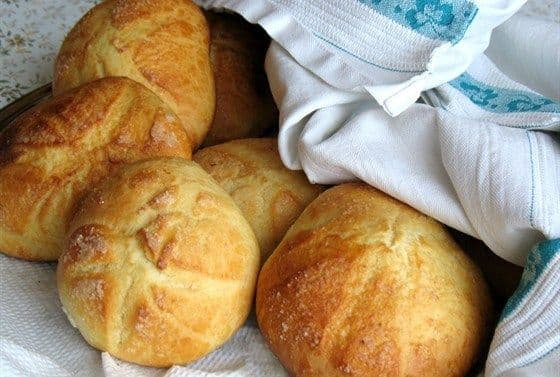
- 1. Дрожжи и сахар развести в теплом молоке.
- 2. Муку просеять с солью.
- 3. Затем дрожжи с сахаром добавить в чуть взбитые яйца. Продолжая взбивать, всыпать муку. Вымешивать тесто около 5 минут, пока тесто не станет упругим. Тесто должно легко отходить от стенок миски и не липнуть к рукам.
- 4. Добавить в смесь размягченное сливочное масло и все тщательно перемешать.
- 5. Накрыть миску с тестом полиэтиленовой пленкой и дать постоять около 1 часа для увеличения в объеме вдвое.
- 6. Затем тесто еще раз вымесить, накрыть пленкой и поставить в холодильник на 4 часа. Лучше оставить в холодильнике на всю ночь.
- 7. После истечения 4-х часов (или спустя ночь) нужно достать тесто из холодильника и дать тесту согреться около 30–40 минут. Затем тесто разделить на булочки и дать подойти 30 минут при комнатной температуре.
- 8. Развести желток с водой и смазать подошедшие булочки, сверху посыпать сахаром.
- 9. Выпекать при 180 градусах до золотистого цвета.
Салат «Хориятики»
| Ингредиенты на 90 г готового блюда | Продукт | Кол-во | Вес |
|---|---|---|---|
| Орегано, сушеный | 0.5 чайные ложки | 0.8 г | |
| Перец сладкий, желтый | 19 г | 19.1 г | |
| Лук, репчатый | 10 г | 10.2 г | |
| Помидор (томат) | 0.5 шт. | 25.4 г | |
| Огурец. грунтовый | 19 г | 19.1 г | |
| Сыр фета, м.д.ж. 48% в сух. в-ве | 11.5 г | 11.4 г | |
| Оливки (чёрные), консервированные | 12.5 г | 12.7 г | |
| Оливковое масло | 1.5 г | 1.3 мл | |
| Уксус, винный 3% | 1.5 г | 1.3 г |
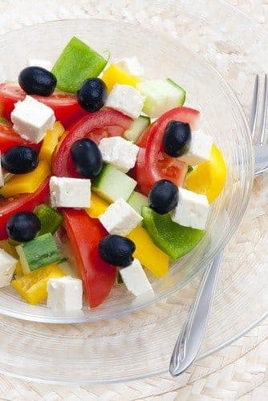
- 1. Репчатый лук очистите, вымойте и нарежьте кубиками.
- 2. Помидоры и огурец вымойте и нарежьте дольками.
- 3. Сладкий перец вымойте, разрежьте пополам и удалите семена. Нарежьте перец небольшими полосками.
- 4. Сыр фета откиньте на дуршлаг и дайте рассолу стечь. Нарежьте сыр кубиками.
- 5. Выложите овощи, маслины, сыр и зелень в салатник. Осторожно перемешайте так, чтобы не помять составляющие салата.
- 6. Винный уксус и оливковое масло взбить вилкой. Заправьте салат соусом.
- 7. Подавайте салат охлажденным, украсив орегано.
Кисло-сладкая курица
| Ингредиенты на 100 г готового блюда | Продукт | Кол-во | Вес |
|---|---|---|---|
| Куриная грудка (филе, курица) | 57.5 г | 57.5 г | |
| Перец сладкий, красный | 21.5 г | 21.6 г | |
| Ананас, консервированный в легком сахарном сиропе | 14.5 г | 14.4 г | |
| Соевый соус | 4 г | 4 г | |
| Уксус, бальзамический | 0.5 чайные ложки | 2.4 г | |
| Сахар, песок | 7 г | 7.2 г | |
| Кетчуп | 7 г | 7.2 г | |
| Картофельный крахмал | 8.5 г | 8.6 г | |
| Подсолнечное масло | 2 г | 2.2 мл |
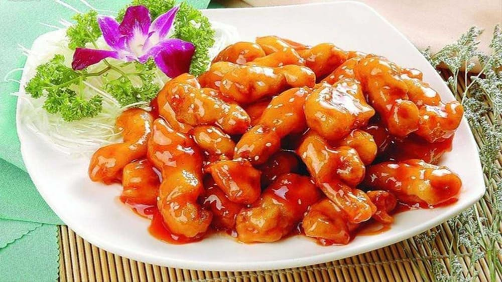
- Нарежьте куриное филе кубиками, посолите и обваляйте в крахмале.
- Обжарьте курицу в масле до золотистого цвета.
- В отдельной сковороде обжарьте нарезанный болгарский перец и ананасы.
- Добавьте в сковороду соевый соус, уксус, сахар и кетчуп. Перемешайте и прогрейте 2-3 минуты.
- Выложите курицу в соус и тушите еще 5 минут.
Рис отварной
| Ингредиенты на 250 г готового блюда | Продукт | Кол-во | Вес |
|---|---|---|---|
| Вода | 5.5 столовые ложки | 98.3 мл | |
| Рис белый, длиннозерный сухой | 2.5 столовые ложки | 67.4 г | |
| Масло сливочное 72,5% жирности, крестьянское | 11 г | 11.2 г |
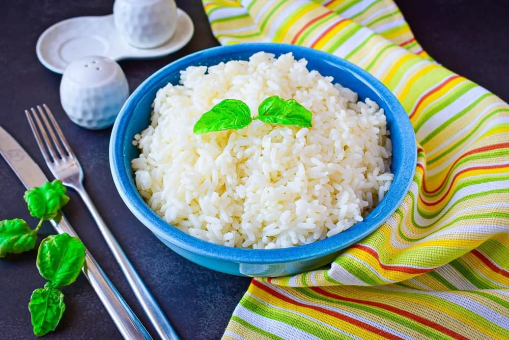
- Подготовленную рисовую крупу кладут в подсоленную кипящую воду и варят при слабом кипении. Когда зерна набухнут и станут мягкими, рис откидывают и промывают холодной водой. После стекания воды рис кладут в посуду, заправляют маслом, перемешивают и прогревают
- #с4лет
Морковно-яблочные оладьи с геркулесом
| Ингредиенты на 100 г готового блюда | Продукт | Кол-во | Вес |
|---|---|---|---|
| Подсолнечное масло, высокоолеиновое (>70%) | 9 г | 8.9 мл | |
| Панировочные сухари | 11 г | 11.1 г | |
| Сметана, 10% жирности | 5.5 г | 5.6 г | |
| Яблоко | 26.7 г | 26.7 г | |
| Морковь | 16.5 г | 16.7 г | |
| Овсяная крупа (овес), "Геркулес" хлопья | 9 г | 9.2 г | |
| Мед, пчелиный | 1 г | 1.1 г | |
| Пшеничная мука, белая высшего сорта | 3.5 г | 3.3 г |
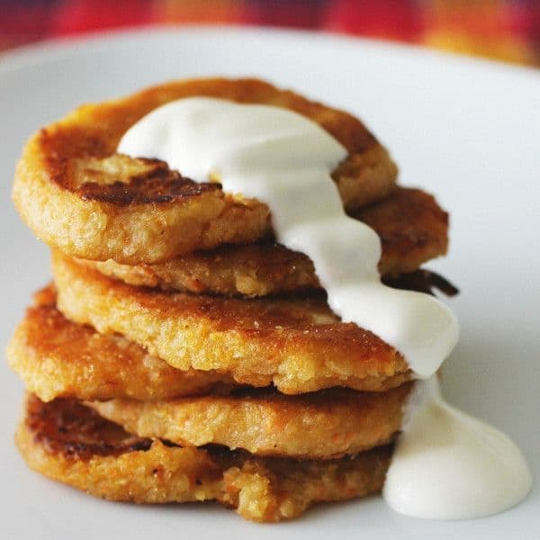
- 1. Чистим морковь и шинкуем в блендере.
- 2. Разогреваем сковороду, наливаем туда воду, высыпаем морковь и начинаем тушить до готовности.
- 3. Затем шинкуем в блендере очищенные яблоки и добавляем к моркови. Тушим до того момента, пока не испарится вода.
- 4. Затем добавляем измельченный в блендере геркулес, ложку меда, щепотку соли по желанию, муку и постоянно помешиваем, пока смесь не станет густой.
- 5. Снимаем «тесто» с огня и перекладываем в другую тару, даем остыть.
- 6. Холодную смесь обмакиваем в панировочные сухари (можно панировку для темпуры) и формируем оладьи. Жарим на растительном масле на среднем огне.
- 7. Подаем со сметаной.
Рисовая каша на молоке
| Ингредиенты на 250 г готового блюда | Продукт | Кол-во | Вес |
|---|---|---|---|
| Рис белый, длиннозерный приготовленный без соли | 150 г | 150 г | |
| Коровье молоко, 2,5% жирности пастеризованное | 5 столовых ложек | 90 мл | |
| Сахар, песок | 7 г | 7 г | |
| Масло сливочное | 3 г | 3 г |
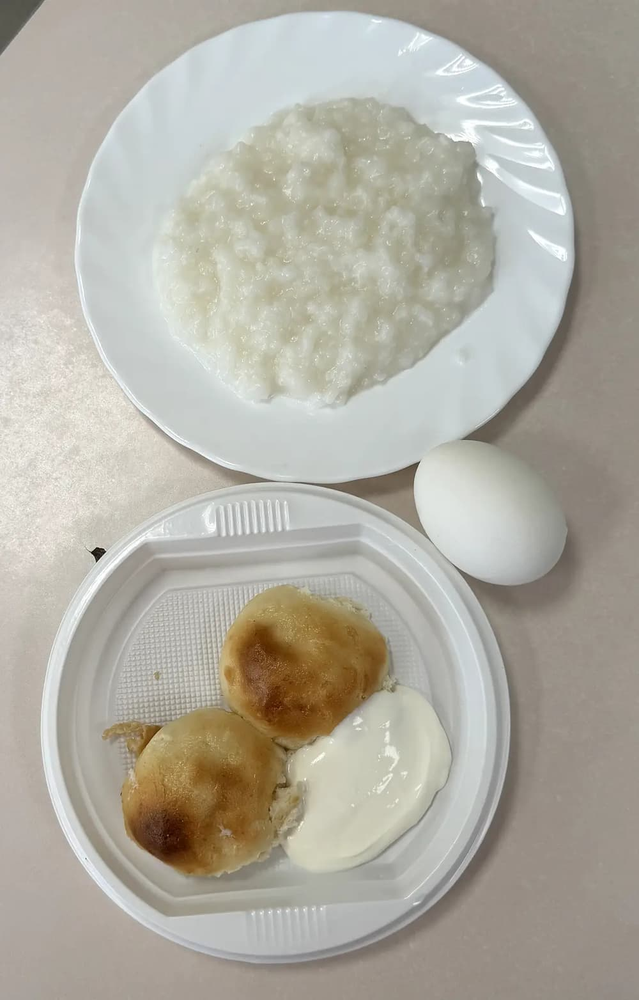
Рис басмати
| Ингредиенты на 200 г готового блюда | Продукт | Кол-во | Вес |
|---|---|---|---|
| Рис белый, длиннозерный сухой | 1.5 столовые ложки | 42.8 г | |
| Вода | 6.5 столовые ложки | 116.3 мл | |
| Соль, столовая йодированная | 1 г | 0.9 г |
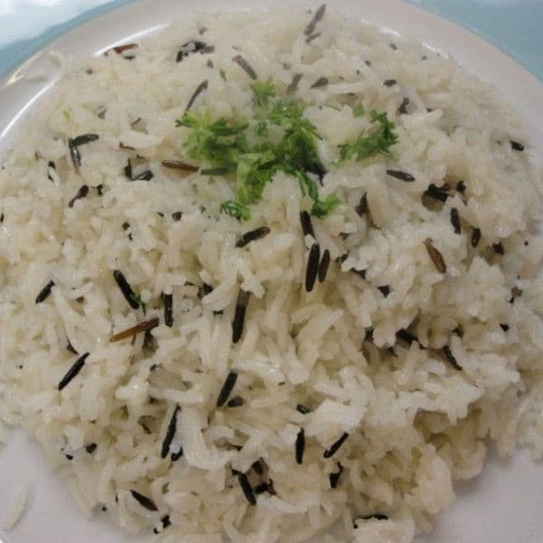
- 1. Рис промыть от 3-х до 7-ми раз. Качественно промытая крупа — залог положительного результата.
- 2. В кастрюле с толстым дном довести до кипения подсоленную воду, всыпать рис.
- 3. Дальше варить 4 минуты на максимальном огне, 4 минуты на среднем и 4 минуты на слабом.
- 4. Снять кастрюлю с плиты и с закрытой крышкой отставить на 12 минут.
- 5. Снять крышку на 5 минут. Тщательно перемешать.
Морковный салат
| Ингредиенты на 70 г готового блюда | Продукт | Кол-во | Вес |
|---|---|---|---|
| Сок из лимона | 3 г | 3.1 мл | |
| Апельсин | 23 г | 22.9 г | |
| Виноград | 11.5 г | 11.4 г | |
| Морковь | 0.5 шт. | 38.1 г | |
| Кунжутное масло | 4.5 г | 4.6 мл |
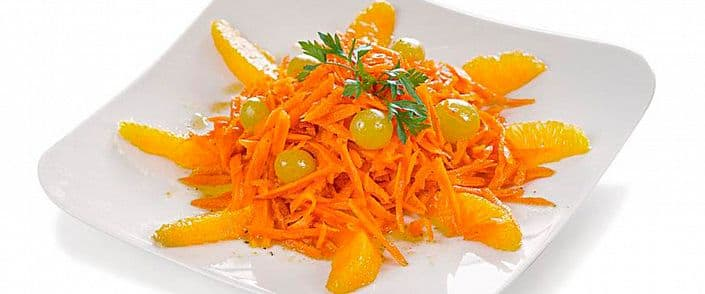
- Приготовление:
- Почистить морковь и натереть ее на терке. Очистить апельсин и разделить на дольки. Выжать сок из второго апельсина. Смешать апельсиновый и лимонный соки, масло. Полученной смесью полить тертую морковь. Сверху положить дольки апельсина и виноград.
Компот сливовый
| Ингредиенты на 300 г готового блюда | Продукт | Кол-во | Вес |
|---|---|---|---|
| Вода | 1 стакан 250 мл. | 242.3 мл | |
| Сахар, песок | 4.5 чайные ложки | 34.6 г | |
| Слива | 2 шт. | 57.7 г |
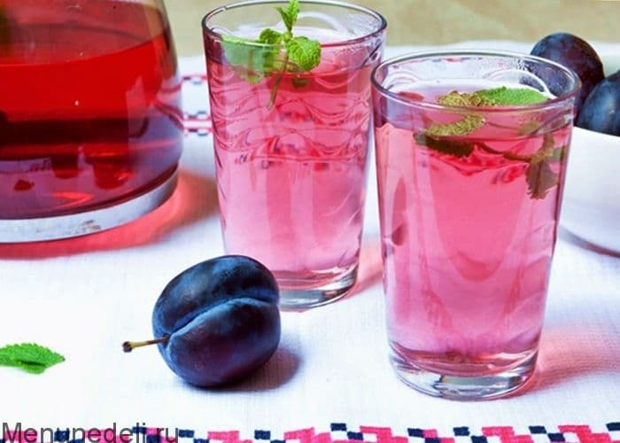
- Из сливы удаляют косточки. Сироп приготавливают следующим образом: в горячей воде растворяют сахар, доводят до кипения, проваривают 6—8 мин. В горячий сахарный сироп закладывают сливу и только доводят до кипения. Затем процеживают.
Треска, рыба, тушеная
| Ингредиенты на 100 г готового блюда | Продукт | Кол-во | Вес |
|---|---|---|---|
| Вода | 4.5 чайные ложки | 22.5 мл | |
| Помидор (томат), грунтовый | 3 г | 3.2 г | |
| Лук, репчатый | 12 г | 11.8 г | |
| Треска | 65.2 г | 65.2 г | |
| Подсолнечное масло, высокоолеиновое (>70%) | 5.5 г | 5.4 мл | |
| Морковь | 0.5 шт. | 28.9 г |
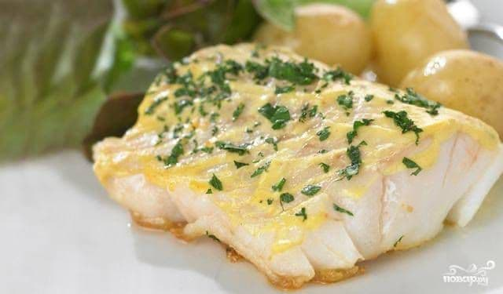
- Филе нарезают на порционные куски, укладывают в посуду в два слоя, чередуя со слоями нарезанных соломкой моркови и лука репчатого, заливают водой, добавляют томатное пюре, сметану, масло растительное, посуду закрывают крышкой и тушат 30 мин до готовности.
- #с4лет
Борщ с капустой и картофелем на курином бульоне со сметаной
| Ингредиенты на 250 г готового блюда | Продукт | Кол-во | Вес |
|---|---|---|---|
| Капуста, белокочанная | 19.5 г | 19.6 г | |
| Подсолнечное масло, высокоолеиновое (>70%) | 1 чайная ложка | 4.9 мл | |
| Сметана, 20% жирности | 5 г | 4.9 г | |
| Картофель, сырой | 19.5 г | 19.6 г | |
| Морковь | 12.5 г | 12.3 г | |
| Паста, томатная | 7.5 г | 7.4 г | |
| Бульон, куриный | 1 стакан 250 мл. | 196.1 г | |
| Сахар, песок | 2.5 г | 2.5 г | |
| Лук, репчатый | 10 г | 9.8 г | |
| Свекла | 0.5 шт. | 39.2 г |
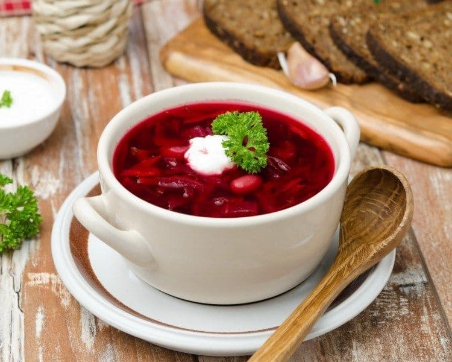
- Овощи предварительно перебрать, очистить, промыть. Мелко нарезанные: репчатый лук и морковь пассировать с растительным маслом, в конце добавить томатное пюре. В кипящий куриный бульон заложить нашинкованную свежую капусту, довести до кипения, затем добавить нарезанный брусочками картофель, варить 10-15 минут затем добавить пассированные овощи, тушеную или вареную свеклу и варить до готовности. За 5-10 минут до окончания варки добавить соль, сахар. При подаче заправить сметаной.
- #до3лет
Салат с моцареллой
| Ингредиенты на 90 г готового блюда | Продукт | Кол-во | Вес |
|---|---|---|---|
| Сыр моцарелла, м.д.ж. 34% в сух. в-ве | 9 г | 9 г | |
| Оливки (зеленые), консервированные | 6.5 г | 6.6 г | |
| Помидор (томат), грунтовый | 21 г | 20.8 г | |
| Огурец. грунтовый | 22 г | 21.9 г | |
| Тунец натуральный. Консервы | 28.5 г | 28.5 г | |
| Шпинат, сырой | 5.5 г | 5.5 г | |
| Подсолнечное масло, высокоолеиновое (>70%) | 3 г | 3.1 мл |
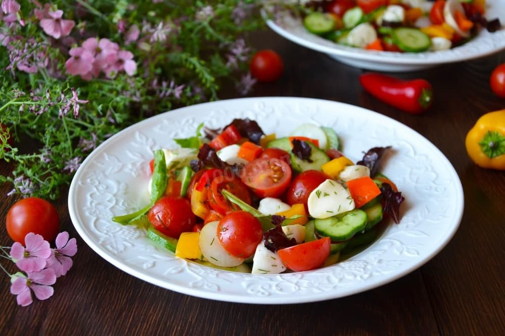
- Нарезать сыр, помидор, огурец.
- Смешать все ингредиенты в тарелке.
Клубничное желе
| Ингредиенты на 100 г готового блюда | Продукт | Кол-во | Вес |
|---|---|---|---|
| Сахар, песок | 18.5 г | 18.5 г | |
| Клубника | 5.5 шт. | 92.6 г | |
| Желатин (порошок) | 0.5 г | 0.7 г | |
| Вода | 0.5 чайные ложки | 2.7 мл |
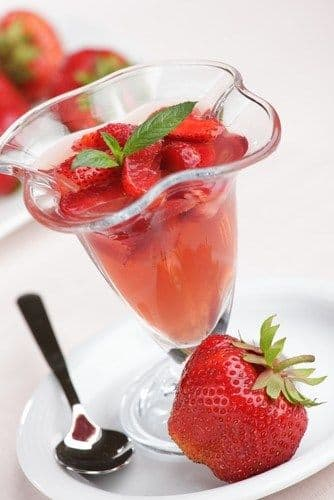
- 1. В миске смешайте клубнику и сахар. Поставьте на водяную баню примерно на 30 минут, пока из клубники не выступит сок. Процедите через сито, не нажимая на ягоды, чтобы сироп не стам мутным.
- 2. Тем временем, в миске смешайте воду и желатин. Оставьте на 2 минуты.
- 3. Соедините желатин с теплым сиропом и размешивайте до полного растворения. Процедите.
- 4. Разлейте массу по формочкам и поставьте в холодильник примерно на 2,5 часа до полного застывания.
Булочки с корицей на дрожжах
| Ингредиенты на 102 г готового блюда | Продукт | Кол-во | Вес |
|---|---|---|---|
| Масло сливочное | 0.5 столовые ложки | 10 г | |
| Яйцо, куриное | 5 г | 5.2 г | |
| Сахар, песок | 7 г | 7 г | |
| Дрожжи, прессованные | 0.5 г | 0.6 г | |
| Коровье молоко, 2,5% жирности пастеризованное | 5 чайных ложек | 25 мл | |
| Пшеничная мука, белая высшего сорта | 1.5 столовые ложки | 45 г | |
| Соль, столовая йодированная | 1 г | 1 г | |
| Сахар, коричневый | 7.5 г | 7.5 г | |
| Корица, молотая | 0.5 чайные ложки | 4 г |
- 1. Дрожжи смешать с 2–3 столовыми ложками теплого молока, 1 чайной ложкой сахара и 1 столовой ложкой муки и оставить на 10 минут.
- 2. Масло растереть с сахаром, добавить яйцо, взбить хорошо до однородной массы венчиком.
- 3. Добавить муку по частям, молоко, получившуюся молочно-дрожжевую смесь и все перемешать.
- 4. Стол посыпать рукой и тщательно вымесить тесто.
- 5. Оставить тесто на час-два, пока оно не увеличится в два раза.
- 6. Когда тесто готово, посыпаем стол мукой и раскатываем его в прямоугольник.
- 7. Посыпаем тесто сахарно-коричной смесью.
- 8. Тесто заворачиваем в рулетик и разрезаем на булочки.
- 9. Противень выстелить пекарской бумагой, смазать сливочным малом.
- 10. Выложить булочки. Смазать их взбитым яйцом и выпекать около 30–40 минут при 180 градусах.
Паста карбонара
| Ингредиенты на 200 г готового блюда | Продукт | Кол-во | Вес |
|---|---|---|---|
| Макароны цельнозерновые (варенные) | 64.5 г | 64.5 г | |
| Сыр м.д.ж. 30% в сухом в-ве | 19.5 г | 19.4 г | |
| Йогурт, 3,2% жирности натуральный | 19.5 г | 19.4 г | |
| Ветчина куриная | 96.8 г | 96.8 г |
- Отварить макароны в подсоленной воде согласно инструкции до состояния al-dente
- Обжарить на хорошо разогретой сковороде ветчину, добавить йогурт.
- Добавить отваренные макароны с небольшим количеством жидкости и протушить еще пару минут
- Посыпать тёртым сыром
Салат из белокочанной и морской капусты (ФИЦ Питания)
| Ингредиенты на 70 г готового блюда | Продукт | Кол-во | Вес |
|---|---|---|---|
| Капуста, белокочанная | 59.2 г | 59.2 г | |
| Петрушка, свежая | 1.5 чайные ложки | 3.2 г | |
| Лук зеленый (перо) | 5 г | 4.8 г | |
| Морская капуста (ламинария) | 13 г | 12.8 г | |
| Сахар, песок | 0.2 г | 0.2 г | |
| Сок из лимона | 1 г | 0.8 мл | |
| Подсолнечное масло, высокоолеиновое (>70%) | 3 г | 2.8 мл |
- Белокочанную капусту мелко нашинковать, добавить соль, раствор лимонной кислоты (0,2г на 10мл воды) и нагреть при непрерывном помешивании, пока капуста не осядет. Капусту охладить, смешать с вареной морской капустой, нарезанной соломкой, или морской капустой консервированной, добавить сахар и растительное масло, все перемешать. При подаче блюдо украсить мелко нарезанным зеленым луком и свежей петрушкой
Грибы под соусом бешамель
| Ингредиенты на 100 г готового блюда | Продукт | Кол-во | Вес |
|---|---|---|---|
| Подсолнечное масло, высокоолеиновое (>70%) | 3 г | 3.2 мл | |
| Шампиньоны, сырые | 2 шт. | 63.1 г | |
| Масло сливочное | 6.5 г | 6.3 г | |
| Лимон | 4 г | 3.8 г | |
| Пшеничная мука, белая высшего сорта | 4.5 г | 4.7 г | |
| Коровье молоко, 2,5% жирности пастеризованное | 2 столовые ложки | 39.4 мл | |
| Яичный желток, куриный | 2 г | 1.9 г | |
| Петрушка, свежая | 0.5 г | 0.5 г | |
| Хлеб пшеничный | 12.5 г | 12.6 г | |
| Соль, столовая йодированная | 0.5 г | 0.3 г | |
| Перец черный, молотый или горошек | 3 шт. | 0.3 г |
- 1. Если грибы небольшие, только вымойте их, не разрезайте. В противном случае отделите шляпки от ножек и порежьте все на крупные куски. Положите в кастрюлю с половиной масла и лимонным соком половины лимона. Готовьте, встряхивая кастрюлю, 6 минут, потом уберите с огня и отставьте.
- 2. Разогрейте 2 ложки подсолнечного масла в сковородке на среднем огне. Отправьте жариться тонкие ломтики хлеба, по 2 минуты с каждой стороны, чтобы они стали золотисто-коричневыми. Лопаткой выложите их на тарелку, покрытую бумажным полотенцем.
- 3. Растопите оставшееся сливочное масло с подсолнечным в ковше, вмешайте муку и готовьте, помешивая, 2 минуты. Потом медленно вливайте молоко, постоянно помешивая, и готовьте еще 10-12 минут, пока соус не загустеет. Слегка взбейте яичные желтки и добавьте к ним немного соуса, чтобы они не свернулись, когда вы выльете их в ковш горячим соусом. Посолите, поперчите и уберите с огня.
- 4. Обсушите грибы и смешайте их с соусом. Подавайте в подогретых порционных тарелках с кусочками хлеба, посыпав мелко порезанной петрушкой.
Рисовая молочная каша
| Ингредиенты на 350 г готового блюда | Продукт | Кол-во | Вес |
|---|---|---|---|
| Сахар, коричневый | 2.5 г | 2.4 г | |
| Рис белый, длиннозерный сухой | 2 столовые ложки | 54.7 г | |
| Коровье молоко, 1,5% жирности пастеризованное | 1 стакан 250 мл. | 237.8 мл | |
| Соль, столовая йодированная | 0.5 г | 0.5 г | |
| Масло сливочное | 0.5 чайные ложки | 4.8 г |
- 1. 1Рис промыть и засыпать в чашу мультиварки.
- 2. Добавить молоко, соль, сахар, масло, перемешать.
- 3. Включить режим «Молочная каша» на 1 час 15 минут.
- 4. После сигнала об окончании работы программы открыть мультиварку и перемешать кашу.
- 5. Закрыть крышку и оставить в режиме «Подогрев» ещё на 15 минут.
- 6. Разложить по тарелкам.
Телятина, грудинка тушеная
| Ингредиенты на 90 г готового блюда | Продукт | Кол-во | Вес |
|---|---|---|---|
| Телятина, 1 кат. | 131.6 г | 131.6 г | |
| Соль, столовая йодированная | 0.5 г | 0.5 г | |
| Перец черный, молотый или горошек | 5.5 шт. | 0.5 г | |
| Оливковое масло | 8 г | 7.9 мл |
- В кастрюлю налить масло, хорошо разогреть. Выложить в масло телятину и обжарить до румяной корочки, посолить и поперчить.
- Долить воду, чтоб она покрыла мясо полностью. Кастрюлю накрыть крышкой, убавить огонь и готовить мясо 45-60 минут, до мягкости. Периодически проверять количество воды и доливать, если потребуется.
Салат из красной капусты и огурца с кунжутной…
| Ингредиенты на 90 г готового блюда | Продукт | Кол-во | Вес |
|---|---|---|---|
| Льняное масло | 1 г | 1 мл | |
| Капуста, краснокочанная | 50 г | 50 г | |
| Огурец. грунтовый | 22 г | 22 г | |
| Морковь | 15 г | 15 г | |
| Кунжут | 0.5 столовые ложки | 4 г | |
| Соевый соус | 3 г | 2.8 г | |
| Сахар, песок | 1 г | 0.8 г | |
| Уксус, яблочный | 0.5 столовые ложки | 8.5 г | |
| Кунжутное масло | 0.5 г | 0.5 мл |
- 1. Огурец нарезаем на тонкие кружочки.
- 2. Капусту тонко шинкуем.
- 3. Морковь трем на крупной терке.
- 4. Готовим заправку. В чашу блендера кладем кунжут и сахар, наливаем уксус, льняное и кунжутное масло. Перемалываем до однородного состояния.
- 5. Колечки огурца укладываем на тарелку, сверху кладем капусту и морковь. Поливаем заправкой, посыпаем черным и белым кунжутом. Подаем.
Банановый кекс
| Ингредиенты на 50 г готового блюда | Продукт | Кол-во | Вес |
|---|---|---|---|
| Масло сливочное | 6 г | 5.8 г | |
| Сахар, песок | 7.5 г | 7.3 г | |
| Яйцо, куриное | 6 г | 6.1 г | |
| Ванилин | 0.1 г | 0.1 г | |
| Банан | 7 г | 7 г | |
| Пшеничная мука, белая высшего сорта | 16.5 г | 16.3 г | |
| Уксус, столовый 9% | 1 г | 0.8 г | |
| Соль, столовая йодированная | 0.2 г | 0.2 г | |
| Сода, пищевая | 0.2 г | 0.2 г | |
| Грецкий орех | 11.5 г | 11.6 г |
- 1. Растопить масло и взбить вместе с сахаром, добавить яйца и ваниль. Размешать.
- 2. Размять бананы до состояния пюре, добавить к массе вместе с мукой, измельченными орехами, солью и содой, гашенной уксусом. Тщательно перемешать.
- 3. Смазать маслом форму для запекания, выложить банановую массу и выпекать в духовке около часа.
Тропический смузи из манго
| Ингредиенты на 200 г готового блюда | Продукт | Кол-во | Вес |
|---|---|---|---|
| Банан | 0.5 шт. | 64.6 г | |
| Манго | 0.5 шт. | 96.9 г | |
| Груша | 0.5 шт. | 48.5 г | |
| Кокосовое молоко, сырое | 2.5 столовые ложки | 48.5 мл | |
| Семена чиа, сушеные | 3 г | 3.2 г |
- Рецепт:
- 1. Почистите манго, уберите косточку.
- 2. Положите все ингредиенты в блендер. Смешайте. Готово!
Макароны, отварные
| Ингредиенты на 260 г готового блюда | Продукт | Кол-во | Вес |
|---|---|---|---|
| Макароны, сухие | 4 столовые ложки | 103.6 г | |
| Соль, столовая йодированная | 1 г | 1 г |
- В кипящую подсоленную воду отправляют макароны, убавляют огонь до среднего и варят до желаемой мягкости. Готовые макароны нужно откинуть на дуршлаг.
Салат с креветками, рукколой и помидорами черри
| Ингредиенты на 70 г готового блюда | Продукт | Кол-во | Вес |
|---|---|---|---|
| Помидор (томат) | 0.5 шт. | 28.6 г | |
| Креветка, сырая | 5 шт. | 76.2 г | |
| Соль, столовая йодированная | 0.5 г | 0.5 г | |
| Перец черный, молотый или горошек | 5 шт. | 0.5 г | |
| Оливковое масло | 0.5 г | 0.5 мл | |
| Уксус, бальзамический | 0.5 г | 0.5 г | |
| Руккола | 9.5 г | 9.5 г |
- 1. Разморозить креветки, очистить.
- 2. Разогреть сковороду с оливковым маслом.
- 3. Жарить креветки на большом огне 2–3 минуты (креветки не должны тушиться, они должны подрумяниться).
- 4. Черри разрезать пополам. Рукколу порвать руками и добавить к помидорам.
- 5. Добавить по вкусу соль, перец и бальзамический уксус.
Индейка в соевом соусе
| Ингредиенты на 90 г готового блюда | Продукт | Кол-во | Вес |
|---|---|---|---|
| Индейка, белое мясо | 84.1 г | 84.1 г | |
| Соевый соус | 10.5 г | 10.5 г | |
| Имбирь, корень сырой | 2 г | 2.1 г | |
| Уксус, яблочный | 3.5 г | 3.6 г | |
| Мед, пчелиный | 6.5 г | 6.3 г | |
| Подсолнечное масло, высокоолеиновое (>70%) | 7 г | 7.2 мл | |
| Паприка, перец сладкий молотый | 0.5 г | 0.3 г | |
| Базилик, сушеный | 0.2 г | 0.2 г | |
| Чеснок, сырой | 2.5 г | 2.5 г | |
| Перец красный, молотый острый | 0.2 г | 0.2 г |
- 1. Мясо нарежьте тонкими полосками примерно одинакового размера. При желании можно применять другой вид нарезки, например кубиками или плоскими отбивными.
- 2. В миске приготовьте маринад на основе соевого соуса. Добавьте к нему масло, жидкий мед, уксус, травы и другие специи. Соль добавляйте по вкусу, учитывая соленые свойства соевого соуса.
- 3.Корень имбиря и дольки чеснока очистите от верхнего слоя, измельчите теркой. Эти ингредиенты тоже отправьте в маринад.
- 4.Компоненты тщательно перемешайте, уделяя особое внимание растворению меда. В пряный маринад опустите полоски индейки. Перемешайте, окутывая смесью каждый ломтик. Маринуйте мясо следующие 60 минут.
- 5.На верхний огонь поставьте сковороду, смажьте ее поверхность маслом. Много не используйте, в маринаде оно уже есть. На горячую поверхность выложите полоски индейки.
- 6.Жарьте на высоком огне примерно 5 минут, периодически перемешивая и постепенно подливая маринад. Дольше жарить не нужно, это пересушит мясо.
- 7. Готовое блюдо дополните зеленью.
Быстрое овсяное печенье
| Ингредиенты на 50 г готового блюда | Продукт | Кол-во | Вес |
|---|---|---|---|
| Яйцо, куриное | 11 г | 10.8 г | |
| Овсяная крупа (овес) | 7 г | 7.1 г | |
| Сахар, песок | 1 г | 1 г | |
| Пшеничная мука, белая высшего сорта | 6.5 г | 6.6 г | |
| Масло сливочное | 2 г | 2.1 г |
- 1. Размягченное сливочное масло растираем с сахаром добела, постепенно добавляя яйца. Когда сахар полностью растворится, добавляем смешанные с мукой овсяные хлопья и все перемешиваем.
- 2. Готовое тесто набираем ложкой и с помощью другой ложки выкладываем на смазанный маслом противень. Выпекаем 10 минут при температуре 180–200 градусов.
Кукурузная каша с курагой
| Ингредиенты на 300 г готового блюда | Продукт | Кол-во | Вес |
|---|---|---|---|
| Кукурузная крупа | 2 столовые ложки | 40.2 г | |
| Курага (абрикосы сушеные) | 2.5 шт. | 32.2 г | |
| Подсолнечник, семечки, поджареные без соли | 8 г | 8 г | |
| Вода | 6.5 столовые ложки | 120.6 мл | |
| Соль, столовая йодированная | 0.5 г | 0.4 г |
- Подготовленную крупу засыпать в кипящую воду, варить периодически помешивая до загустения в течение 15-20 мин., затем добавить горячее порезанную курагу и варить до готовности. Добавить соль. При подаче кашу посыпать семенами подсолнечника.
Омлет со шпинатом, стручковой фасолью и пармезаном
| Ингредиенты на 50 г готового блюда | Продукт | Кол-во | Вес |
|---|---|---|---|
| Яйцо, куриное | 0.5 шт. | 27.2 г | |
| Шпинат, сырой | 5.5 г | 5.4 г | |
| Фасоль, стручковая зеленая | 19 г | 19 г | |
| Сыр пармезан, м.д.ж. 36% в сух. в-ве | 5.5 г | 5.4 г | |
| Масло гхи | 2.5 г | 2.7 мл |
- 1. Фасоль отварить до готовности, откинуть в дуршлаг.
- 2. В сковороде растопить масло, слегка обжарить фасоль.
- 3. Яйца взбить, смешать со шпинатом, влить к фасоли, сверху посыпать твёрдым сыром.
Каша гречневая (без соли и масла)
| Ингредиенты на 200 г готового блюда | Продукт | Кол-во | Вес |
|---|---|---|---|
| Гречиха, зерно | 2 столовые ложки | 50.9 г | |
| Вода | 4.5 столовые ложки | 76.7 мл |
- Гречневую крупу перебрать, тщательно промыть.
- Подготовленную для варки крупу всыпать в кипящую воду, всплывшие пустотелые зерна удалить. Кашу варить до загустения, периодически помешивая. В конце варки плотно закрыть посуду крышкой и оставить на плите с умеренным нагревом для упревания.
Азу из говядины
| Ингредиенты на 158 г готового блюда | Продукт | Кол-во | Вес |
|---|---|---|---|
| Подсолнечное масло, высокоолеиновое (>70%) | 2 г | 2 мл | |
| Говядина, 1 кат. | 0.5 куска | 125 г | |
| Огурцы, маринованные с укропом | 1 шт. | 40 г | |
| Лук, репчатый | 15 г | 15 г | |
| Сметана, 15% жирности | 2.5 столовые ложки | 50 г | |
| Соль, столовая йодированная | 1 г | 1 г | |
| Перец черный, молотый или горошек | 10 шт. | 1 г |
- 1. Порезать мясо на мелкие кусочки, можно кубиками. Нарезать головку репчатого лука как обычно — кольцами или полукольцами.
- 2. Обжарить мясо с луком. Немного посолить и поперчить мясо и перемешать с луком еще раз. Мелко нарезать кубиками соленые огурцы.
- 3. Добавить огурцы к мясу с луком и тушить их немного, чтобы огурцы дали сок. Затем добавить 200 грамм сметаны (лучше нежирной, а если жирной, то меньше), любимые специи к мясу и тушить еще 20 минут.
Суп гороховый с картофелем на мясном бульоне (ФИЦ Питания)
| Ингредиенты на 300 г готового блюда | Продукт | Кол-во | Вес |
|---|---|---|---|
| Картофель, сырой | 0.5 шт. | 58.6 г | |
| Горох, лущеный крупа | 25.3 г | 25.3 г | |
| Петрушка, свежая | 4.5 г | 4.4 г | |
| Морковь | 15.5 г | 15.6 г | |
| Лук, репчатый | 7.5 г | 7.5 г | |
| Подсолнечное масло, высокоолеиновое (>70%) | 3 г | 3.1 мл | |
| Соль поваренная пищевая | 0.5 г | 0.6 г | |
| Бульон, говяжий | 1 стакан 250 мл. | 224.5 г |
- Горох перебрать, промыть, заложить в холодную воду на 3-4 часа, варить в этом же бульоне до размягчения, затем добавить нарезанный кубиками картофель, пассированные в небольшом количестве воды с добавлением масла растительного морковь, лук репчатый и варить до готовности, затем добавить горячий мясной бульон, соль и довести до кипения. При подаче посыпать мелко нарезанной зеленью.
Яблочно-морковный кекс
| Ингредиенты на 100 г готового блюда | Продукт | Кол-во | Вес |
|---|---|---|---|
| Яблоко | 0.5 шт. | 40.2 г | |
| Морковь | 20 г | 20.1 г | |
| Коровье молоко, 1,5% жирности пастеризованное | 24 г | 24.1 мл | |
| Овсяная мука (овес) | 12 г | 12.1 г | |
| Яйцо, куриное | 21 г | 20.9 г | |
| Разрыхлитель пищевой | 1 г | 1 г | |
| Подсластитель эритрит, FitParad | 6 г | 6 г |
- 1) измельчить в блендере все ингредиенты до однородности
- 2) перелить в форму для выпечки
- 3) ставим в микроволновку примерно на 5 минут до готовности
Смузи с киви и бананом
| Ингредиенты на 400 г готового блюда | Продукт | Кол-во | Вес |
|---|---|---|---|
| Руккола | 0.5 шт. | 31.8 г | |
| Киви, свежее | 1 шт. | 63.5 г | |
| Апельсин | 1.5 шт. | 158.7 г | |
| Банан | 0.5 шт. | 105.8 г | |
| Вода | 6 столовых ложек | 105.8 мл |
- Приготовление:
- Взбить в блендере до однородной массы.
Салат с кино и креветками
| Ингредиенты на 100 г готового блюда | Продукт | Кол-во | Вес |
|---|---|---|---|
| Киноа, приготовленная | 7.5 г | 7.4 г | |
| Руккола | 9 г | 8.9 г | |
| Помидор (томат), черри | 2 шт. | 29.7 г | |
| Авокадо | 12 г | 11.9 г | |
| Оливковое масло | 4.5 г | 4.5 мл | |
| Сок из лимона | 6 г | 5.9 мл | |
| Креветка, приготовленная на пару | 2.5 шт. | 29.7 г | |
| Лук красный | 12 г | 11.9 г |
- 1. Креветки размораживаем и маринуем. Для этого соединяем 2 чл оливкового масла и любимые приправы для морепродуктов. Оставляем на 15-20 минут. Далее креветки необходимо припустить на сковороде 5-7 минут.
- 2. Кино необходимо отварить в подсоленной воде. Для этого залейте киноа 100 мл воды и готовьте на среднем огне пока зернышки не впитают всю жидкость, около 15-20 минут. При необходимости добавьте воду.
- 3. Начинаем собирать салат. Авокадо нарежем мелким кубиком, добавим листья салата и помидорки бери. Тудаже отправляем уже6 остывший кино и креветки.
- 4. Заправляем салат: соединяем 2 чл оливкового масла и сок лимона, перемешиваем и добавляемк салату.
Рис бурый сваренный
| Ингредиенты на 250 г готового блюда | Продукт | Кол-во | Вес |
|---|---|---|---|
| Рис, бурый короткозерный сухой | 3 столовые ложки | 72.6 г | |
| Вода | 5 столовых ложек | 90.8 мл | |
| Соль, столовая йодированная | 6 г | 6.1 г |
- Рис хорошенько промыть и оставить в воде примерно на 30 минут. Далее перекладываем рис в кастрюлю и заливаем водой (пропорции 1 к 2.5), солим, доводим до кипения под крышкой, снимаем крышку, варим на сильном огне еще около 5-7 минут, убираем огонь и довариваем примерно в течении 20-30 минут. Снимаем с плиты и даем настояться. Готово
Курица тушеная
| Ингредиенты на 70 г готового блюда | Продукт | Кол-во | Вес |
|---|---|---|---|
| Куриная грудка (филе, курица) | 84 г | 84 г | |
| Сметана, 10% жирности | 14 г | 14 г |
- Подготовленные тушки птицы, нарезают на порционные куски, складывают в глубокую посуду, тушат в посуде с закрытой крышкой 15-20 мин при слабом кипении, добавляют сметану и продолжают тушить до готовности.
- #с4лет